À propos des auteurs
Jean-Michel Bruel est Professeur des Universités à l’Université de Toulouse, Co-fondateur de l’association SysML-France en 2009, membre du comité éditorial de la revue SoSyM depuis sa création en 2002, membre du Steering Committee de la conférence ACM/IEEE MODELS depuis 2008, chef du département informatique de l’IUT de Blagnac de 2009 à 2012, co-responsable de l’axe Systèmes Ambiants de l’IRIT depuis 2009, membre du comité technique MBSE de l’AFIS, et enseigne la modélisation depuis 1995.
Sébastien Gérard est … (Papa de Papyrus :-)
JMB & SG
Avant-propos
Ce que n’est pas ce livre :
Ce livre n’est pas un livre :
-
de référence (pour cela, même s’il est en anglais, nous conseillons [Friedenthal2016])
-
sur la meilleure approche méthodologique possible avec SysML™ (car il n’y en pas d’absolue)
-
pour réviser l’examen de certification de l’OMG™ ou de l’INCOSE, comme [OCSMP] (mieux vaut vous plonger dans la spécification [sysml])
Pourquoi lire ce livre ?
Il peut y avoir plusieurs raisons pour lire ce livre, même partiellement. Voici les différentes raisons qui peuvent vous y avoir amené :
- Je veux fiabiliser mon processus d’Ingénierie Système
-
Vous êtes un professionnel, dans le domaine de l’Ingénierie Système, et vous êtes intéressé par la modélisation. Nous espérons que les conseils pratiques, appliquées et appuyés sur l’outil Papyrus-SysML, vous permettront de tester l’intérêt de SysML™ pour votre domaine.
- Je veux apprendre SysML™ par la pratique
-
Ce livre est entièrement réalisé dans cet objectif. Nous allons à l’essentiel des concepts et surtout nous vous permettons de les manipuler de manière concrète dans un l’outil Papyrus-SysML.
- Je veux maîtriser Papyrus-SysML
-
Le logiciel prend une part de plus en plus importante dans le développement de systèmes complexes. Si vous utilisez déjà Papyrus-SysML comme modeleur UML™, et que vous souhaitiez apprendre SysML™ en conservant vos habitudes, ce livre, réalisé en collaboration avec l’équipe du CEA LIST en charge du développement de Papyrus-SysML, devrait vous y aider.
- Je veux utiliser des solutions open-source pour l’Ingénierie Système
-
C’est un des avantages de Papyrus-SysML : c’est un logiciel ouvert, auxquels de nombreux programmeurs contribuent, permettant ainsi la prise en compte rapide des remarques utilisateurs, la disponibilité d’un forum riche, etc.
- Je veux utiliser des normes d’Ingénierie Système
-
Si, comme généralement en Ingénierie Système, vous basez vos processus et outils sur des standards, vous aurez avec SysML™, une notation standard pour vos modèles (apprise en filière technologique des Lycées, en classe préparatoires et dans beaucoup d’écoles d’ingénieurs). Et vous aurez, avec Papyrus-SysML, un outils 100% conforme à cette spécification.
- Je veux gagner du temps
-
Nous avons essayer de concevoir ce livre comme un manuel[1], outillé et pratique, en travaillant l’organisation des concepts et des pratiques.
À qui s’adresse le livre ?
En fonction de votre profil, vous pourrez avoir une lecture plus ou moins complète de cet ouvrage. Loin de nous l’idée de forcer la façon d’en aborder les chapitres, nous vous recommandons néanmoins les pistes de lectures suivantes selon la situation :
| SysML™ \ Papyrus-SysML | Découvrir | S’améliorer | Maîtriser |
|---|---|---|---|
Découvrir |
|||
S’initier |
|||
Maîtriser |
Si vous êtes débutant en Ingénierie Système, nous vous conseillons en parallèle de vous initier. Le livre n’aborde pas directement les concepts systèmes.
Comment lire ce livre ?
|
Commentaire
|
Ce document a été réalisé de manière à être lu de préférence dans sa version électronique, ce qui permet de naviguer entre les références et les renvois interactivement, de consulter directement les documents référencés par une URL, etc.
|
Si vous lisez la version papier de ce document, ces liens clickables ne vous servent à rien, mais n’hésitez pas à en consulter la version électronique! |
Comment se préparer à lire au mieux ce livre ?
|
Commentaire
|
Conventions typographiques et symboles récurrents
Nous avons utilisé un certain nombre de conventions personnelles pour rendre ce document le plus agréable à lire et le plus utile possible, grâce notamment à la puissance d’AsciiDoc :
-
des mises en formes particulières (e.g.,
NomDeBlocpour un élément de modèle), -
des références bibliographiques (comme la spécification [SysML]), présentées en fin de document (cf. Références),
-
tous les flottants (figures, tableaux) sont listés à la suite de la table des matière, XXX check this XXX
-
les termes anglais (souvent incontournables) sont repérés en italique, non pas pour indiquer qu’il s’agit d’un mot anglais, mais pour indiquer au lecteur que nous employons volontairement ces termes (e.g., Requirements),
-
un certain nombre de symboles viennent identifier les notes :
|
Commentaire
|
| Ceci est une simple note, un point remarquable. |
| Attention, piège ou erreur à éviter. |
| Ceci est un point important. |
|
Convention : Ceci est une convention ou une bonne pratique
Dans ces notes, nous distillerons des conseils, des bonnes pratiques ou des conventions que nous recommandons d’adopter. |
|
|
Définition : Exemple (OMG SysML v1.x, p. xyz)
Ces notes concernent des définitions tirées de la spécification SysML™ et sont donc précisément référencées. |
Historique
Ce document est la compilation de plusieurs années d’enseignement de SysML™ ou de Papyrus-SysML par les auteurs depuis plus de dix ans, que ce soit :
-
au Master TI, de l’Université de Pau et des Pays de l’Adour (avec Nicolas Belloir),
-
au Master Recherche SAID, de l’UPS,
-
au Master ICE de l’Université de Toulouse II - Le Mirail (avec Pierre de Saqui Sannes),
-
au Master of Science de Göteborg, Suède (introduction réalisée par Nicolas Belloir),
-
à Universitad Autónoma de Guadalajara, au Mexique (40h de formation professionnelle à des employés de Continental Mexique),
-
XXX to be completed by Seb XXX
Vous trouverez en référence (cf. Références) les ouvrages et autres documents utilisés pour la réalisation de ce livre.
1. Introduction
|
Commentaire
|
SysML est un langage de modélisation, certains diraient une notation. La principale difficulté, avec SysML, c’est que cette notation n’est associée a aucune méthode en particulier, ni aucun outil en particulier (cf. [sysmlprfc]). Il s’agit là d’une volonté délibérée des concepteurs, l’OMG™ et l’INCOSE, pour permettre la plus grande adoption de la notation dans les entreprises. Il vous sera donc possible d’appliquer votre propre démarche, votre propre processus interne de développement. Contrairement à l’outil Capella par exemple, fortement couplé à la méthode Arcadia, l’outil Papyrus-SysML n’impose aucune démarche particulière. Nous allons aborder en fin de ce chapitre les processus connus et courants en ingénierie système généralement associés à SysML. Pour les besoins de ce livre nous avons retenu la démarche préconisée par Friedenthal dans [Friedenthal2016].
1.1. Pourquoi et quoi modéliser ?
|
Commentaire
|
1.1.1. Pourquoi modéliser ?
Pour un observateur A, M est un modèle de l’objet O, si M aide A à répondre aux questions qu’il se pose sur O
Matter, mind, and models (Semantic Information Processing 1968)
Il n’est pas dans les objectifs de ce livre d’explorer cette vaste question (voir [Jézéquel] ou [Cabot]), mais disons simplement que nous considérons la définition ci-dessus comme essentielle. Les modèles permettent de communiquer (entre personnes, entre outils) et d’appréhender la complexité des véritables systèmes en développement.
1.1.2. Différence entre modèle et dessin
SysML™ n’est pas une palette de dessins et d’éléments de base servant à faire des diagrammes. Il existe une représentation graphique des éléments modélisés en SysML™. Elle est importante car elle permet de communiquer visuellement sur le système en développement, mais du point de vue du concepteur, c’est le modèle qui importe le plus.
C’est pourquoi nous vous recommandons de ne jamais "dessiner" des diagrammes SysML™ [2], mais d’utiliser des outils dédiés comme Papyrus-SysML. Ils respectent en général la norme SysML 1.5 (bien qu’il faille se méfier).
|
Notez que la norme permet de faire des adaptations graphiques (cf. la discussion http://www.realtimeatwork.com/2011/08/is-sysml-too-abstract/). |
Un des intérêts de la modélisation est de faciliter la communication, notamment au travers des diagrammes et leur aspect graphique et synthétique. Un dessin est donc un plus par rapport à du texte. Néanmoins, il ne faut pas se contenter d’un simple dessin pour au moins deux raisons importantes :
-
un dessin n’est pas assez formel (comment être sûr d’avoir correctement utilisé tel ou tel symbole) ;
-
il est impossible d’assurer la cohérence globale des modèles dans le cas d’un dessin.
Un modèle est une sorte de base de donnée qui regroupe des éléments issues de différents points de vue (saisis le plus souvent au travers de diagrammes). Un diagramme est une vue partielle du modèle (donc incomplète). Le modèle est la vraie plus value car il va permettre de détecter les incohérences sur les exigences, les problèmes de complétude, lancer des analyses, faire des transformations vers d’autres langages ou formats, etc. Par exemple dans un outil de modélisation il y a une grande différence entre supprimer un élément d’un diagramme (on parlera alors de "masquer" un élément d’un diagramme) et supprimer un élément de modèle (ce qui aura pour effet de supprimer cet élément de tous les diagrammes où il était présent).
1.2. Démarches et méthodes de développement
Ce livre n’est pas un livre sur l’ingénierie système. Il ne s’agit donc pas pour nous de rappeler les grandes démarches de développement de système. Nous renvoyons pour cela le lecteur aux grands classiques (xxx,yyy).
Références sur les méthodos : [Estefan], [Ramos], [Dickerson], CESAME, Arcadia, SEBOK, OOSE, Tim Wilkiens, CORE (EFFB), Merise?
1.3. Matrice des concepts
|
Commentaire
|
La matrice qui nous servira de "carte de base" pour placer les activités ou les modèles, sera celle-ci :
| Exigences | Structure | Comportement | Transverse | |
|---|---|---|---|---|
Organisation |
||||
Analyse |
||||
Conception |
||||
Implémentation |
Cette matrice permet de situer les différents éléments qui seront vus dans ce cours dans un cadre utile pour comparer ces éléments les uns aux autres. Nous vous conseillons de vous faire votre propre matrice. L’essentiel est de toujours bien se représenter les différents éléments qu’on aborde dans une carte mentale précise. Cela permet une meilleure mémorisation.
1.3.1. Points de vue
Dans un axe horizontal, nous avons différencié quatre grands points de vue :
- Exigences
-
Les exigences et leur prises en compte sont un éléments critique pour le succès du développement de tout système. Sans explorer l’ensemble des activités d’ingénierie système (ce qui nécessiterait tout un volume du type de Besoins clients et exigences) nous insisterons sur cet aspect.
- Structure
-
La description de l’architecture et des éléments constitutifs du système, avec les blocs, leurs relations, organisations internes, etc. constituera un point de vue important. C’est souvent la partie de modélisation qui pose le moins de problème aux débutants.
- Comportement
-
Le comportement d’un système est du point de vue de l’utilisateur final beaucoup plus important que la structure elle-même. C’est la partie qu’il est la plus à même d’exprimer, de comprendre (via les modèles) et de valider. Nous distinguons dans ce livre le comportement global (du système) du comportement local (des éléments constitutifs).
- Transverse
-
Un certains nombre de concepts sont transverses aux trois points de vue précédents. Il s’agira principalement de parler de cohérence ou de traçabilité entre les phases de développement ou entre les points de vue.
Ces différents points de vue ne doivent pas être confondus avec les différentes phases de développement (cf. devphase). Ils sont plutôt à rapprocher de la notion de préoccupation. C’est ainsi que nous avons choisi de distinguer trois points de vue qui se retrouvent souvent en modélisation : le point de vue des exigences qui permet de se focaliser sur les besoins des clients ; le point de vue structurel qui permet de se focaliser sur les différents composants du système ; et le point de vue comportemental qui permet de se focaliser sur le comportement global et local. Ces trois points de vue n’étant pas indépendants les uns des autres, nous avons intégré un quatrième point de vue transversal.
1.3.2. Phase de développement
Dans un axe vertical, nous avons différencié quatre grandes phases du cycle de vie du développement :
- Organisation
-
Une étape indépendante du type de cycle de développement envisagé (en V, agile, etc.) mais qui concerne la mise en place d’un cadre de travail qui permette un développement de qualité (outils, éditeurs, gestionnaire de version, de tâches, etc.).
- Analyse
-
Cette phase vise plutôt à examiner le domaine du problème. Elle se focalise sur les cahiers des charges et les exigences. L’analyse débouche sur un dossier d’analyse qui décrit les grandes lignes (cas d’utilisation, architecture principale) du système.
- Conception
-
Cette phase vise plutôt à examiner le domaine de la solution. Elle débouche sur un dossier de conception qui décrit les détails conceptuels de la solution envisagée (structure détaillée, comportement, etc.)
- Implémentation
-
Cette phase traite des développements finaux (construction ou approvisionnement en matériel, développement de codes, etc.).
Il s’agit ici classiquement des grandes étapes de développement d’un système. On pourrait être surpris par l’étape que nous avons appelé "Organisation". C’est une étape que nous considérons importante, particulièrement pour l’enseignement. Avant toute activité de modélisation ou de même de développement, il convient en effet de s’organiser en termes de choix d’outils, choix d’environnement, etc. Cette étape est souvent négligée par les étudiants. C’est pour cela que nous avons décidé de faire figurer cette étape de manière explicite. Bien sûr dans une organisation existante cette étape sera contrainte par les habitudes "maison".
1.4. Organisation de ce livre
|
Commentaire
|
Suite à cette introduction, nous allons présenter l’étude de cas qui nous servira de "fil rouge" (chapitre Étude de cas). Nous donnons ensuite les instructions pour installer l’environnement minimal pour réaliser les exercices de ce livre (chapitre Avant de démarrer). Nous donnons ensuite un aperçu de tous les diagrammes SysML™, pour que le lecteur ait une bonne vue d’ensemble et puisse faire les connexions nécessaires entre tous les diagrammes. Ensuite… (chapitre Langages vs Méthode). Ensuite… (chapitre [start]). Nous rentrons dans le détail avec les chapitres suivants. Nous commençons par les exigences (chapitre [RE]). Nous poursuivons par l’utilisation du système (cas d’utilisation et interfaces, chapitre [Usages]). Ensuite nous traitons des éléments structurels (chapitre Structure et contraintes) et comportementaux (chapitre Comportement local). Interaction… (chapitre Interaction). Préoccupations transveres… (chapitre Préoccupations transverses de modélisation). Nous terminons par différents aspects complémentaires (chapitre Modéliser oui, mais…). Un certain nombres d'annexes complètent le livre.
2. Étude de cas
|
Commentaire
|
Nous allons modéliser dans cet ouvrage un système complexe, réel : la Maison Intelligente de Blagnac (MIB). Nous avons volontairement choisi un domaine qui prend de l’ampleur : l’Internet des Objets (IoT - Internet of Thing).

La MIB est un appartement permettant la supervision de personnes dépendantes (patients, personnes âgées, …) à domicile. La description de ce système (notre spécification initiale) est disponible sur le site http://mi.iut-blagnac.fr/. Pour permettre de démarrer la modélisation, nous partirons d’un fichier partagé des exigences initiales.
|
2.1. Description
La variété des équipements disponibles dans la MIB permet à son occupant de réaliser un ensemble de tâches comme :
-
Surveiller (Monitoring) ma consommation énergétique (globale ou d’un équipement en particulier)
-
Activer des dispositifs (actuators) comme l’intensité d’une ampoule (light bulb), l’ouverture d’un rideau (shutter)
-
Surveiller les données collectées par des capteurs (sensors) comme la temperature, la luminosité, etc.
L’objectif principal de la MIB est d’être un support à l’assistance et au monitoring de personne à domicile qui sont autonome mais qui doivent être suivies ou aidées. Les éléments de conforts mais surtout de sécurité sont donc primordiaux et doivent être fournis de manière continue, et potentiellement nécessiter des moyens humains d’assistance.
L’intérêt de ce cas d’étude (que nous appèlerons Smart Home System, ou SHS dans ce livre) est qu’elle nécessite de prendre en compte les aspects sécurité (security), adaptation (accommodation), sociaux (societal), légaux (legislative), économiques (economical), et écologiques (ecological). Dans ce qui suit nous décrivons plus précisément quelques services attendus d’un tel système.
2.1.1. Sécurité
Comme n’importe quelle autre logement, la maison intelligente doit être sécurisée. Le Smart Home System doit donc fournir un certain niveau de protection contre les intrus et les voleurs. Ce niveau doit même être renforcé du fait de la vulnérabilité induite par l’ultra-connectivité du système. On profitera donc avantageusement du niveau d’équipement pour mettre en place les réponses adaptées (alarmes, alertes automatiques, etc.) sans pour autant oublier de donner un accès privilégié aux différents acteurs de la supervision (pompiers, médecins, etc.). Such L’accès aux données personnelles (notamment de santé) via les différents dispositifs connectés sera fortement contrôlé. Les notions d’identification, de certification ou de cryptage seront donc primordiales.
2.1.2. Adaptation
Le Smart Home System doit pouvoir s’adapter aux conditions physiques et mentales de l’occupant[3]. Par exemple, la hauteur des équipements de cuisine (meubles, éviers) s’abaissent automatiquement si l’occupant est en fauteuil roulant. Un autre exemple, qui concerne les personnes atteintes de troubles cognitifs, est la possibilité de guider l’occupant par la voix ou par un signal lumineux au sol, d’un point à un autre de la maison (par exemple le matin de son lit à la salle de bain). Le Smart Home System doit également permettre de configurer les nombreux équipements en fonction des préférences de l’occupant (par exemple, heure de fermeture des volets ou du réveil, etc.).
2.1.3. Environnement et économie
Une des caractéristique des maisons intelligentes modernes est leur prise en compte de l’environnement et donc des consommations énergétiques. L’objectif peut être économique, légal (suivre une norme ou un label), ou simplement social. Par exemple le Smart Home System pourra abaisser la température de la maison à certains moments (programmés ou opportuns). Les dispositifs inutiles à certains moments de la journée pourront être mis en sommeil, idem pour les débits Internet, etc. La maison pourra aussi être autonome en énergie, ou tout le moins, produire dans une certaine mesure sa propre énergie (éolienne, panneaux solaires, etc.).
2.2. Plateforme expérimentale
Un véritable Smart Home System est disponible à la MIB, sur le campus de l’IUT de Blagnac, près de Toulouse. N’hésitez pas à nous contacter si vous êtes intéressé par des expérimentations réelles.
2.3. Liste des exigences
Nous fournissons ci-dessous une liste précise d’exigences (requirements) pour le Smart Home System. Cette liste est bien sûr non-exhaustive et nous permettra simplement de montrer le lien en Papyrus-SysML entre ces exigences et les artefacts de modélisation.
| ID | Categorie | Description |
|---|---|---|
SH_SEC_010 |
Sécurité |
Le SHS doit empêcher les accès non autorisés. |
SH_SEC_020 |
Le SHS doit protéger les systèmes d’informations utilisés. |
|
SH_SEC_030 |
Le SHS doit fournir un contrôle d’accès par identification. |
|
SH_SEC_040 |
Le SHS doit appeler la police en cas d’intrusion ou d’effraction. |
|
SH_SEC_050 |
Le SHS doit être capable de détecter la fumée et d’appeler les pompiers en cas de suspicion d’incendie. |
|
SH_SEC_060 |
Le SHS doit être capable de détecter la chute accidentelle et d’appeler le SAMU en conséquence. |
|
SH_SEC_070 |
Le SHS doit permettre un accès spécifique aux secours (pompiers, ambulanciers, etc.). |
|
SH_ACO_010 |
Adaptativité |
Le SHS doit s’adapter aux conditions physiques et/ou mentales de l’occupant. |
SH_ACO_020 |
Le SHS doit s’adapter aux préférences spécifiques renseignées par l’occupant. |
|
SH_ACO_030 |
Le SHS doit pouvoir apprendre du comportement de l’occupant. |
|
SH_ACO_040 |
Le SHS doit aider l’occupant dans ses tâches quotidiennes en tenant compte le plus possible de ses difficultés. |
|
SH_ACO_050 |
Le SHS doit pouvoir être supervisé par un dispositif central, dans la pièce principale de l’habitation. |
|
SH_ACO_060 |
Le SHS doit permettre la connexion avec les équipements modernes de l’occupant (smartphone, montre, pèse-personne, etc.). |
|
SH_ACO_070 |
Le SHS doit posséder un lit adaptés aux personnes à mobilité réduite. |
|
SH_ECO_010 |
Économique |
Le SHS doit économiser l’énergie. |
SH_ECO_020 |
Le domicile doit être économe en énergie et ayant une consommation globale inférieure aux normes constatées localement. |
|
SH_ECO_030 |
Le SHS doit donner la priorité aux énergies renouvelables. |
2.4. Pour aller plus loin
Cette étude de cas a été utilisée dans le cadre d’un cours SysML™ au Master DL ainsi que pour le workshop http://mase.cs.queensu.ca/mdetools/. Ces deux sources peuvent fournir nombre de modèles complémentaires à ceux que vous trouverez dans ce livre.
3. Avant de démarrer
|
Commentaire
|
| Exigences | Structure | Comportement | Transverse | |
|---|---|---|---|---|
Organisation |
You are here! |
You are here! |
You are here! |
You are here! |
Analyse |
||||
Conception |
||||
Implémentation |
3.1. Papyrus
Vérifiez que vous possédez bien sur votre machine : Papyrus-SysML 3.0
(ou une version supérieure).
| Pour plus d’information, consultez guide d’installation du site de Papyrus. |
3.2. Matériel de formation en complément de ce livre
|
Commentaire
|
Le site qui répertorie tous les matériels utiles en complément de ce livre (tutoriels, modèles, compléments, corrections, etc.) se trouve ici : https://bit.ly/sysmlbook.
Si vous souhaitez vérifier que votre installation fonctionne en créant un premier projet Papyrus-SysML, vous pouvez consulter la section [gettingStarted].
3.3. Pour ceux qui veulent aller vite
Les modèles de ce livre (cf. Étude de cas) sont disponibles ici : https://github.com/PapyrusSysMLinAction/SmartHomeUseCase.
Pour créer un projet qui contienne ces modèles, suivez simplement les étapes suivantes :
-
Importez le projet git existant
-
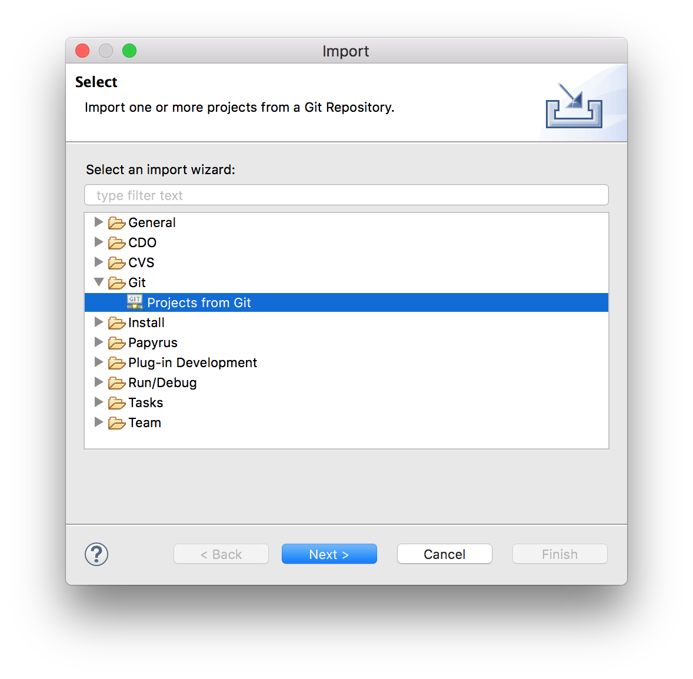
-
choisir et entrez l’URL du projet (https://github.com/PapyrusSysMLinAction/SmartHomeUseCase)
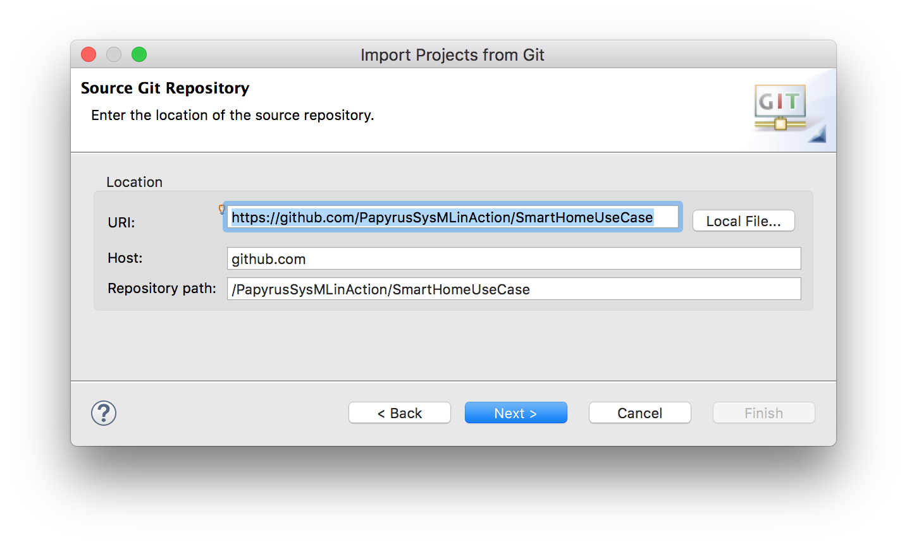 -
choisir la branche
masterdu dépôt et l’emplacement de votre copie locale -
Voilà!

-
-
Explorez le modèle via le
Model Explorer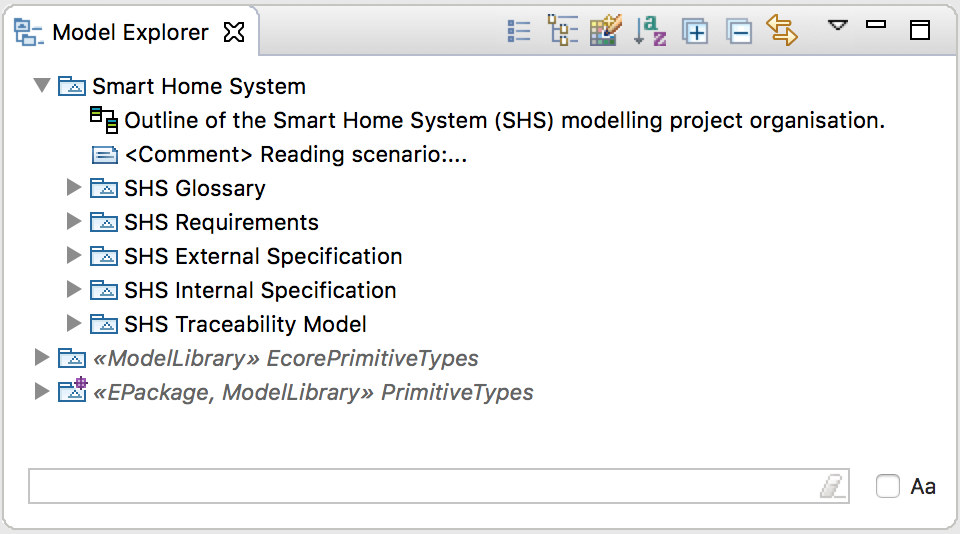
4. Les contours de SysML (introduction à SysML)
|
Commentaire
|
Si vous ne devez lire qu’un seul chapitre, c’est celui-ci. L’objectif de ce chapitre est de présenter l’ensemble des diagrammes SysML™ et à quelles questions ils peuvent permettre de répondre par rapport à des problématique d’Ingénierie Système.
4.1. Pourquoi une nouvelle notation (par rapport à UML)
A good notation has subtlety and suggestiveness which at times makes it almost seem like a live teacher.
The World of Mathematics (1956)
Il existe une notation qui se veut "unifiée" pour les modèles : UML™. Néanmoins cette notation est peu adaptée pour l’Ingénierie Système :
-
UML 1.x était complètement inadaptée :
-
Principalement pour les systèmes d’information
-
Peu de liens entre les diagrammes
-
Peu de liens entre les modèles et les exigences
-
-
UML 2.x n’est pas beaucoup mieux si ce n’est :
-
Implication des ingénieurs systèmes pour sa définition
-
Introduction du diagramme de structure composite
-
En conclusion UML™ est une bonne base :
-
Standard De facto en génie logiciel
-
Fournit beaucoup de concepts utiles pour décrire des systèmes (même complexes)
-
Stable et extensible (grâce notamment au mécanisme de profile)
-
Beaucoup d’outils disponibles
Mais…
-
Manque de certains concepts clés d’Ingénierie Système
-
Vocabulaire beaucoup trop « software » pour être utilisé par les ingénieurs systèmes (concept de
classeou d'héritagepar exemple) -
Trop de diagrammes (14 sortes!)
4.2. Introduction à SysML
4.2.1. Fiche d’identité
Voici à quoi pourrait ressembler la fiche d’identité de SysML™ :

4.2.2. SysML, c’est…
- Un ensemble de 9 types de diagrammes
-
-
Diagrammes structuraux
-
Diagrammes comportementaux
-
Diagramme d’exigence (
req)
-
- Un profil UML™
-
C’est à dire une extension de cette notation, un ensemble de nouveaux concepts et éléments qui sont définis à partir des éléments de base d’UML™. Un exemple : le
blocSysML™ n’est qu’une redéfinition de laclasseUML™. - Une notation
-
Une notation de plus en plus enseignée et connue et qui servira donc de plus en plus de référence à la modélisation des systèmes.
4.2.3. SysML, ce n’est pas…
- Une méthode
-
En effet, contrairement à ce que beaucoup pensent en l’abordant, SysML™ ne propose pas de démarche particulière de développement de système. C’est à la fois sa force (votre méthode existante pourra continuer à être utilisée) comme sa faiblesse car cette absence de guide méthodologique fait souvent défaut à son utilisation.
- Un outil
-
Nous verrons en effet que SysML™ ne fait que ce qu’on veut bien en faire. Comme tout langage il est limité dans son pouvoir d’expression, mais surtout il reste une simple notation qu’il convient d’utiliser avec des outils et des démarches associées.
|
Ne dites pas "le SysML" mais tout simplement "SysML". |
4.2.4. Différence avec UML
La figure suivante, tirée de la spécification, résume bien les liens entre SysML™ et UML™, à savoir que SysML™ reprend une partie seulement des concepts d’UML™ (appelée UML4SysML) en y ajoutant des concepts nouveaux.

4.2.5. Qui est "derrière"?
Il est intéressant de se rappeler que SysML™ est un standard qui vient des utilisateurs, qui participent à sa définition et à ses évolutions. Voici une liste non exhaustive des entreprises et des acteurs qui participent à son évolution :
- Industrie
-
American Systems, BAE Systems, Boeing, Deere & Company, EADS Astrium, Eurostep, Israel Aircraft Industries, Lockheed Martin, Motorola, NIST, Northrop Grumman, oose.de, Raytheon, Thales, …
- Vendeurs d’outils
-
Artisan, EmbeddedPlus, Gentleware, IBM, Mentor Graphics, PivotPoint Technology, Sparx Systems, Vitech, …
- Autres organisations
-
AP-233, INCOSE, Georgia Institute of Technology, AFIS, …
|
La liste complète des membres de l’OMG™ est accessible à l’URL : http://www.omg.org/cgi-bin/apps/membersearch.pl |
4.2.6. Outils SysML
Il va de soit que le meilleur outil SysML™ à ce jour est Papyrus-SysML[4], dont ce livre vous détaille l’utilisation, mais il existe un certain nombre d’autres outils permettant de réaliser des modèles SysML™. En voici une liste non exhaustive :
4.2.7. Organisation des différents diagrammes
Les ingénieurs systèmes ont l’habitude d’utiliser des représentations graphiques (plans, graphes, …). SysML™ propose de couvrir la modélisation d’un système au travers de 9 diagrammes. Ces diagrammes couvrent les aspects structurels et comportementaux du système ainsi que les exigences. La figure suivante présente cette organisation en faisant, au passage, le lien avec ceux d’UML™ :

Le nom de ces diagrammes revenant souvent dans ce document, nous utiliserons souvent leur version abrégée
(uc pour "diagramme des UC" par exemple). Ces abréviations, sont définies dans la spécification (cf. note suivante).

|
|
Définition : Types de diagrammes (OMG SysML v1.5, p. 196)
SysML diagram kinds should have the following names or (abbreviations) as part of the heading… |
4.2.8. Cadre pour les diagrammes
Abordons quelques principes généraux de SysML™, c’est à dire des éléments indépendants d’un diagramme en particulier :
-
chaque diagramme SysML™ décrit un élément précis (nommé) de modélisation,
-
chaque diagramme SysML™ doit être représenté à l’intérieur d’un cadre (Diagram Frame),
-
l’entête de ce cadre, appelé aussi cartouche, indique les informations sur le diagramme :
-
le type de diagramme (
req,act,bdd,ibd,stm, etc. en gras) qui donne immédiatement une indication sur le point de vue porté à l’élément de modélisation (comportement, structure, etc.) -
le type de l’élément (par exemple package, block, activity, etc.), optionnel
-
le nom de l’élément modélisé (unique)
-
le nom du diagramme ou de la vue, optionnel.
-
Dans l’exemple ci-dessous, le diagramme "Context_Overview" est un Block Definition Diagram (type bdd)
qui représente un package, nommé "Context".

| Un cadre peut contenir dans ses "bords" des éléments importants en fonction du type de modèle qui est représenté dans le cadre (ports d’un bloc, points d’entrée/sortie d’une machine à état, paramètres d’une activité, etc.). |
4.2.9. Notre présentation des diagrammes
Comme nous l’avons vu précédemment les 2 grandes catégories de diagrammes SysML™ sont les diagrammes structuraux et les diagrammes comportementaux. Si l’on met à part le diagramme des exigences (représentation visuelle des exigences) et le diagramme de packages (représentation visuelle des packages), les autres diagrammes nécessitent de préciser l’utilisation que nous préconisons d’en faire.
Pour les diagrammes structuraux, quand il s’agira de représenter les architectures, nous utiliserons les diagrammes de définition de blocs, et pour représenter l’intérieur d’un système, nous utiliserons le diagramme de blocs internes. Le diagramme paramétrique n’est qu’un diagramme de blocs internes dédié aux relations entre valeurs (pour représenter des lois physiques par exemple).
Pour les diagrammes comportementaux, nous utilisons la distinction entre comportement global et local, comme indiqué dans la figure suivante. Ainsi les diagramme des cas d’utilisation et les diagrammes de séquences seront plutôt utilisés pour représenter le coprtement global tel qu’attendu par les partie prenantes du système. Tandis que les diagrammes d’activité et les diagrammes d’état seront plutôt utilisés en phase de conception.

Pour ceux qui cherchent à étudier un diagramme en particulier voici un plan de cette section (nous utilisons ici le "plan" vu lors de l’introduction de la Matrice des concepts) :
| Exigences | Structure | Comportement | Transverse | |
|---|---|---|---|---|
Organisation |
||||
Analyse, Conception, Implémentation [5] |
4.3. Diagramme et table des exigences
La gestion des exigences est une activité cruciale pour le développement correct de tout système. Dans SysML™ les exigences peuvent être représentées sous deux formes complémentaires :
-
Diagramme des exigences (req ), utile pour représenter les relations entre exigences
-
Table d’exigences, utile dès qu’il y a un grand nombre d’exigences
4.3.1. Diagramme des exigences
Ce diagramme permet de représenter graphiquement les exigences et leurs relations. Il sera vu plus en détail dans la section Besoins clients et exigences, mais en voici un exemple.

4.3.2. Table des exigences

4.4. Diagramme des cas d’utilisation

4.5. Diagramme de blocks

|
Diagramme de contexte
Un diagramme de blocks un peu particulier consiste à représenter le système dans son environnement.
Ce "diagramme de contexte" est pratique d’un point de vue modélisation car le système et les autres éléments en interaction avec lui, sont très tôt identifiés et "référençables" (des 
Figure 13. Exemple de diagramme de contexte
|
4.6. IBD
|
Diagramme de contexte
Nous avons parlé du diagramme de contexte dans la section précédente sur le diagramme de block. Une autre façon de représenter le système dans son environnement est d’utiliser le diagramme de bloc interne : 
Figure 14. Exemple de diagramme de contexte (vue interne)
|
4.7. Diagrammes de séquence (sd)
Le diagramme de séquence est un diagramme populaire pour représenter les participants d’une interaction.
Il est souvent intéressant de procéder par étapes, en définissant un premier diagramme représentant les interactions entre le système (vue comme une boîte noire) et les différents acteurs impliqués dans ces interactions. Dans ce diagramme, appelé diagramme de séquence système (DSS), le seul participant (en dehors des acteurs) est le système lui-même.
Il est ensuite possible de représenter le même cas d’utilisation, mais en considérant cette fois-ci le système comme une "boîte blanche", c’est à dire en précisant les différents participants impliqués par ce cas.
4.7.1. Diagrammes de séquence système
Les diagrammes de séquence système (DSS) sont des Sequence Diagrams UML™ classiques où seul le système est représenté comme une boîte noire en interaction avec son environnement (les utilisateurs généralement).
Il permet de décrire les scénarios des cas d’utilisation sans entrer dans les détails. Il convient donc mieux à l’ingénierie système qu’un diagramme de séquence classique.

xxx à vérifier xxx
4.7.2. Diagramme de séquences
Le diagramme de séquence permet de représenter les différents participants (dont la ligne de vie représente une chronologie des événements) et les échanges de messages entre eux.
Pour plus de détails, cf. Diagrammes de séquence.
4.8. Diagramme d’états
4.9. Diagramme d’activité
4.10. Diagramme paramétrique
4.11. Diagramme de packages
4.12. Allocation, traçabilité et autres points de cohérences
4.13. En résumé
4.14. Questions de révision
| Exigences | Structure | Comportement | Transverse | |
|---|---|---|---|---|
Organisation |
||||
Analyse |
||||
Conception |
||||
Implémentation |
5. Langages vs Méthode
|
Commentaire
|

6. Getting Started with Papyrus-SysML
|
Commentaire
|
6.1. Fondements
| Exigences | Structure | Comportement | Transverse | |
|---|---|---|---|---|
Organisation |
You are here! |
You are here! |
You are here! |
You are here! |
Analyse |
||||
Conception |
||||
Implémentation |
Nous allons aborder dans ce chapitre l’utilisation de Papyrus-SysML. Le lecteur pourra trouver des informations complémentaires sur la page de documentation : https://wiki.eclipse.org/Papyrus_User_Guide.
6.2. Configuration
Comme indiqué au chapitre Avant de démarrer, nous considérons que vous avez la
version 3.0 (ou plus) de Papyrus-SysML, pour la version Oxygen (4.7)
d’eclipse.
| N’oubliez pas qu’un certain nombre de modèles "tous prêts" sont disponibles ici : https://github.com/PapyrusSysMLinAction/SmartHomeUseCase. |
6.3. Préparation et organisation
Voici l’organisation que nous allons utiliser pour notre étude de cas.

Créez votre premier projet :
-
Sélectionnez et cochez
SysML 1.4puis Next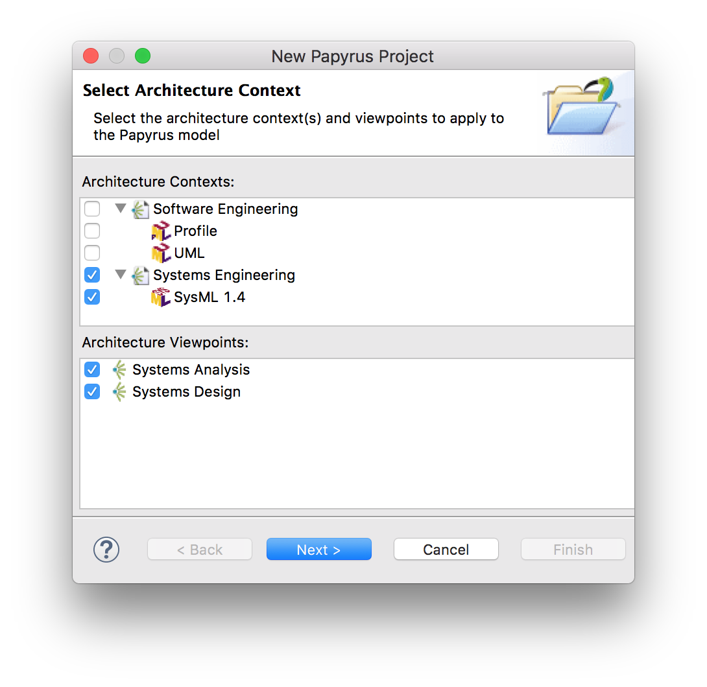 -
Donnez un nom à votre projet
-
Cliquez sur Next (ou sur Finish si vous ne souhaitez pas configurer les éléments de départ)
-
Choisissez les éléments dont vous savez déjà que vous allez avoir besoin

-
Cliquez sur Finish. Vous y êtes.
|
Vous pouvez aussi démarrer d’un projet UML™. Par contre il faut changer en cliquant-droit sur le modèle dans le Model Explorer et en sélectionnant Switch Architecture Context puis en cochant Systems Engineering. |
6.4. L’environnement de modélisation
Comme de nombreux outils basés sur eclipse, Papyrus-SysML propose une organisation type des fenêtres et panneaux, appelée perspective.
Les éléments principaux de cette organisation sont :
-
Le Project Explorer, élément eclipse qui vous permet d’accéder à vos projets (pas seulement Papyrus-SysML)
-
Le Model Explorer, qui permet d’accéder à vos modèles et à tous vos artefacts de modélisation (cf. section Modélisation par les artefacts).
-
L'Outline, sorte de vue d’ensemble du diagramme ouvert (utile pour les très grands diagrammes)
-
L’éditeur de diagramme (Multi diagram editor), l’élément principale dans lequel vous ouvrirez et concevrez vos diagrammes.
-
La Palette, qui dépend du type de diagramme ouvert dans l’éditeur de diagramme et qui vous permet de "copier/coller" des éléments dans votre diagramme (cf. section Modélisation par les diagrammes)
-
La Properties view, qui permet d’accéder à des informations détaillées. Généralement, l’onglet le plus utilisé est l’onglet Properties qui permet d’accéder et de renseigner les détails de l’élément sélectionné (ici le bloc
Capteur) -
La barre de menu (Toolbar), qui contient certains raccourcis de manus sous forme d’icônes.
|
Pour retrouver la perspective Papyrus-SysML ou en changer : (cf. Menu Window > Perspective) ou cliquez sur l’icône Papyrus en haut à droite (Pour activer la perspective Papyrus).
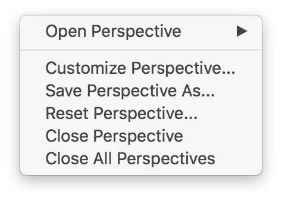
Figure 20. Menu Window > Perspective

Figure 21. Pour activer la perspective Papyrus
|
6.5. Modélisation par les diagrammes
6.5.1. Exemple simple
Commençons à manipuler Papyrus-SysML avec un premier diagramme…
| Nous conseillons d’éviter les caractères spéciaux ou les blancs dans les noms des éléments de modélisation. Cela peut en effet poser des problèmes plus tard (exécution de modèles, génération de documentation, etc.). |
Pour notre modélisation du Smart Home System, nous utilisons l’organisation suivante[6] :

Comme vous pouvez le constater, nous annotons les éléments de modèles avec des commentaires, et pas seulement parce qu’il s’agit d’un exemple illustratif pour un livre, comme nous le détaillons dans la section suivante.
6.5.2. Annoter les éléments de modèles
Il est important de documenter les modèles. Si vous souhaitez ensuite pouvoir générer une documentation intéressante (cf. section Gen2Doc) ou analyser automatiquement les commentaires.
|
6.6. Modélisation par les artefacts
6.6.1. Export des diagrammes
Si vous souhaitez simplement obtenir des figures de vos diagrammes :
-
sélectionnez un modèle puis
-
choisissez le répertoire d’export et le format (PNG, GIF, SVG, PDF, …)
Nous vous recommandons de sélectionner Prefix with qualified names.
Figure 26. Exemple d’export de diagrammes
| Vous constaterez que l’export ne conserve pas l’entête (cartouche). C’est une des fonctionnalités attendues des utilisateurs et en cours de prise en compte par les développeurs du CEA LIST. Nous vous invitons à soutenir pour cette feature en allant voter sur : https://bugs.eclipse.org/bugs/show_bug.cgi?id=354296. |
6.6.2. Gen2Doc
6.7. En résumé
La prise en main d’un outil comme Papyrus-SysML n’est pas quelque chose que l’on peut facilement résumer en quelques pages dans un livre. Néanmoins, le fait qu’il soit basé sur eclipse permettra à ceux qui ont déjà l’habitude de cet IDE de ne pas être dépaysé.
Pour ceux qui veulent véritablement maîtriser l’outil, nous renvoyons le lecteur aux tutoriels disponibles sur le site : https://www.eclipse.org/papyrus/documentation.html.
6.8. Questions de révision
-
Quelle est la version actuelle de Papyrus-SysML ?
7. Besoins clients et exigences
|
Commentaire
|
7.1. Fondements
| Exigences | Structure | Comportement | Transverse | |
|---|---|---|---|---|
Organisation |
You are here! |
|||
Analyse |
You are here! |
|||
Conception |
You are here! |
|||
Implémentation |
You are here! |
|
|
Concepts définis dans cette section
Nous aborderons les concepts du niveau initial (Model User) de la certification Certified Systems Modeling Professional™: requirement, requirement diagram, derive, verify, satisfy, refine, trace, containment. |
Les exigences sont prises en compte à différent niveaux en SysML™. Nous aborderons :
-
L’organization des Requirements
-
Les Requirements properties
-
Les Requirements links
-
Les Requirements Diagrams
-
Les considérations sur la traçabilité
-
Annotations des Requirements
-
Les Use Case Diagrams
|
L’ingénierie des exigences est une discipline à part entière et nous n’abordons ici que les aspects en lien avec la modélisation système. Voir le livre de référence pour plus de détails ([Sommerville1997]) ou le guide de l’AFIS ([REQ2012]). |
7.2. L’organisation des Requirements
Il ne s’agit pas ici de revenir sur les exigences elles-même, mais plutôt de voir comment SysML™ permet de les exprimer, de les manipuler et surtout de les lier avec le reste du système.
7.2.1. Représentation de base
Un Requirement en SysML™ permet de représenter une exigence, généralement
référencée dans un document à part (ou dans un logiciel dédié).
Une exigence est donc représentée par un bloc particulier (stéréotypé << requirement >>), avec deux attributs
obligatoires : Id qui représente une référence unique (généralement reprise du
document initiale d’où a été importée l’exigence), et text qui reprend le texte
descriptif de l’exigence.
|
|
Définition : Requirements (OMG SysML v1.5, p. 161)
A requirement specifies a capability or condition that must (or should) be satisfied… A requirement is defined as a stereotype of UML Class… |

7.2.2. Nouveauté de SysML 1.5
La dernière version de SysML™ en date du 1er mai 2017 apporte des progrès significatifs en ce qui concerne les exigences.

7.2.3. Différents types d’organisation
L’ingénierie des exigences aboutit généralement à une liste organisée d’exigences, que ce soit en terme de fonctionnelles/non fonctionnelles, de prioritaires/secondaires, etc. Le principal support de SysML™ à cette organisation, outre la possibilité de les annoter (cf. section Stéréotyper les exigences), consiste à utiliser les packages.
Plusieurs types d’organisations sont possibles :
-
Par niveau d’abstraction
-
Besoins généraux (en lien avec les use cases par exemple)
-
Besoins techniques (en lien avec les éléments de conception)
-
-
Par point de vue
-
Besoins principaux (en lien avec les use cases)
-
Besoins spécifiques :
-
Fonctionnels
-
Marketing
-
Environnementaux
-
Business
-
…
-
-
-
etc.
|
Exemple industriel
Dans l’entrepris CS, les exigences sont organisées en calquant l’arborescence sur les documents textuels que les ingénieurs ont l’habitude d’utiliser. Ceci facilite le travail d’organisation des exigences pour les ingénieurs [Neptune17]. |
Dans le Smart Home System, nous avons organisé les exigences en paquetages par grands types :

|
Une autre façon d’organiser les exigences consiste à utiliser la relation de Containment (cf. À vous de jouer… pour plus de détails). 
Figure 30. Composition entre exigences
|
7.2.4. Tableaux de Requirements
Les requirements sont habituellement stockés dans des tableaux (feuilles excel le plus souvent!). Il est donc recommandé par le norme et possible dans de nombreux outils de représenter les exigences sous forme tabulaire.
|
|
Définition : Requirements Table (OMG SysML v1.5, p. 167)
The tabular format is used to represent the requirements, their properties and relationships… |

La plupart des outils modernes permettent le passage entre outils classiques de gestion des exigences (comme DOORS™) et outils de modélisation SysML™.
XXX Parler des imports/exports ReqIf, de l’import/export excel etc.
7.3. Les Requirements properties
Il est possible d’indiquer un certain nombre de propriétés sur un requirement :
-
priority (
high,low, …) -
source (
stakeolder,law,technical, …) -
risk (
high,low, …) -
status (
proposed,aproved, …) -
verification method (
analysis,tests, …)
7.4. Les Requirements links
Les principales relations entre requirement sont :
| Containment |
Pour décrire la décomposition d’une exigence en plusieurs sous-exigences (⊕–). Typiquement dès qu’une exigence est exprimée avec une conjonction "et" ("La voiture doit être rapide et économe."). |
| Refinement |
Pour décrire un ajout de précision ( |
| Derivation |
Pour indiquer une différence de niveau d’abstraction ( |
|
Lorsqu’une exigence possède plusieurs cas |

Il existe ensuite les relations entre les besoins et les autres éléments de modélisation
(les block principalement) comme <<satisfy>> ou <<verify>>, mais nous les aborderons
dans la partie transverse.

7.5. Les Requirements Diagrams
Voici un exemple de req un peu plus étoffé, tiré de http://www.uml-sysml.org/sysml (voir aussi Exemples de rationale et problem (OMG SysML v1.5, p. 227)) :

7.6. Stéréotyper les Requirements
Tout comme pour n’importe quel bloc, il est possible de stéréotyper les requirements. Ceci permet de se définir ses propres priorités et classifications. Quelques exemples de stéréotypes utiles :
-
<<interfaceRequirement>>,<<physicalRequirement>>, … -
<<FunctionalRequirement>>,<<nonFunctionalRequirement>>
7.7. Annotations des Requirements
Il est possible d’annoter les éléments de modélisation en précisant les raisons (rationale) ou les éventuels problèmes anticipés (problem).
7.8. Les considérations sur la traçabilité
Une fois que les requirements ont été définis et organisés, il est utile de les lier au moins aux use cases
(en utilisant <<refine>> par exemple) et aux éléments structurels (en utilisant <<satisfy>> par exemple), mais ceci
sera abordé dans la partie sur les concepts transverses.
|
Par exemple, en général, chaque requirement devrait être relié à au moins un artefact de conception (ne serait-ce qu’un use case)[7]. |
7.9. Les Use Case Diagrams
Bien que nous traitions les cas d’utilisation dans la partie interface, nous les abordons ici du fait de leur proximité avec les requirements.

Ce diagramme est exactement identique à celui d’UML™.

|
Un acteur représente un rôle joué par un utilisateur humain. Il faut donc plutôt raisonner sur les rôles que sur les personnes elles-mêmes pour identifier les acteurs. |
7.10. À vous de jouer…
7.10.1. Tables d’exigences
7.10.2. Diagramme d’exigences
Réalisons maintenant un diagramme d’exigence.
-
ClickDroit sur le dossier
SHS Requirements -
Sélectionnez
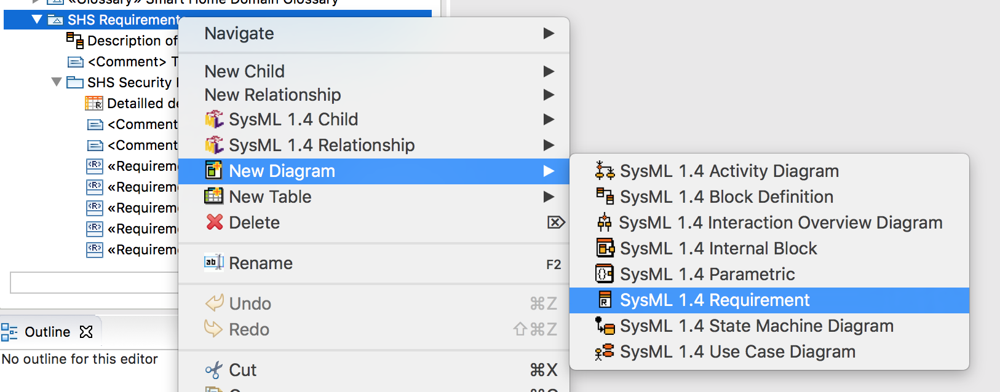 -
Donnez un nom à votre diagramme

-
Sélectionnez un élément
Requirementdans la palette en haut à droite et lachez-le sur la fenêtre principale correspondant à votre diagrammeNotez le petit +vert qui indique que vous êtes autorisé à lacher l’élément de la Palette à cet endroit du diagramme. -
Renseignez les
IdetTextà minima.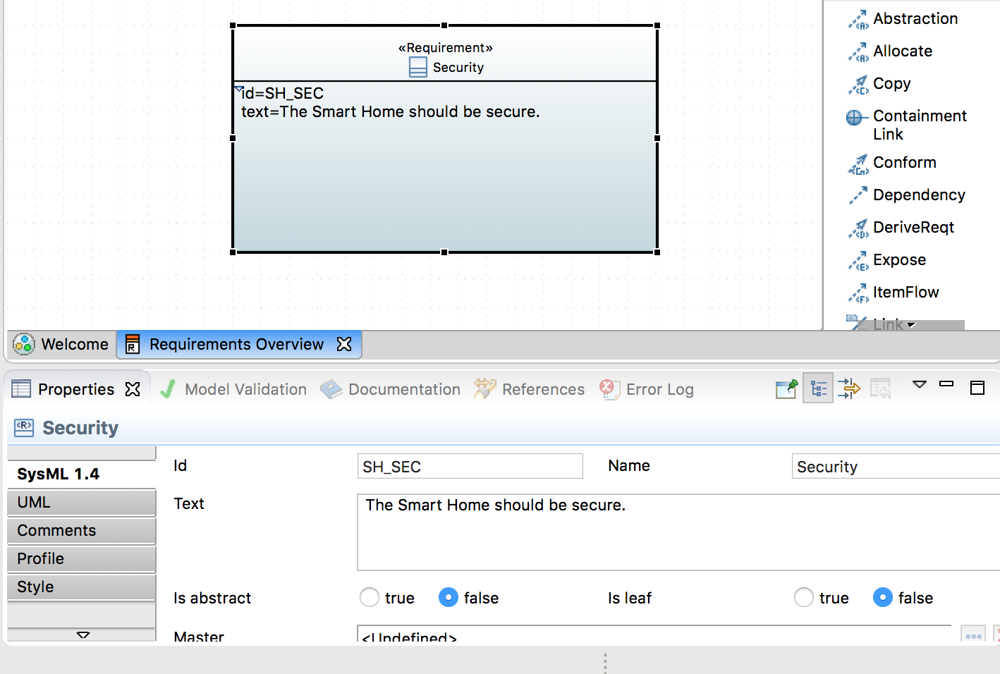 -
Sélectionnez toutes les exigences du package
SHS Security Requirementset lachez-les sur votre diagramme, puis reliez les à votre première exigence par des liens de Containment.
Nous n’avons pas obtenu ce diagramme du premier coup. Voici la version initiale :
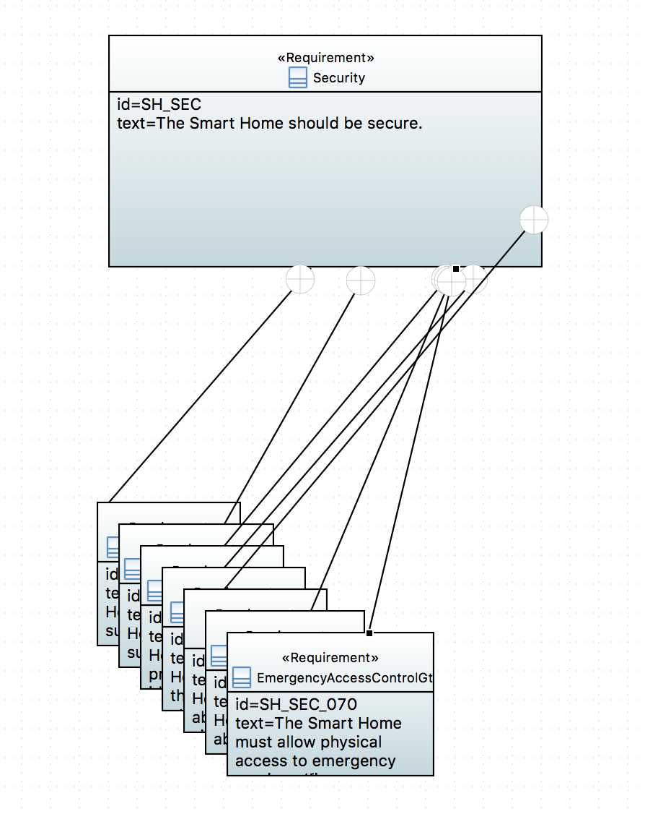Nous avons sélectionner tous les élements à arranger puis utilisé les icônes dédiées dans la Toolbar.
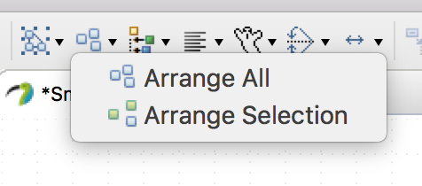
À ce stade il nous faut faire plusieurs observations :
-
Notre exigence
Secutity, se retrouve au même niveau que le diagramme lui-même (c’est à dire dans le modèleSHS Requirements). -
Les exigences qui composent notre exigence
Securityont "disparues" de leur package initial et sont maintenant "dans" notre exigence.
On voit que la notion de Containment n’est pas juste une métaphore. Cela peut poser des problèmes d’organisation. C’est pour cela que nous vous conseillons plutôt de réaliser vos modèles à partir des artefacts. On pourra solutionner ce problème en utilisant le lien de
<< copy>>fait pour cela.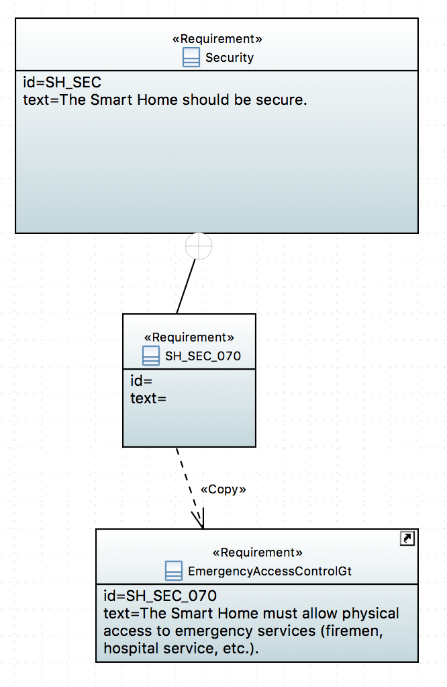
7.11. En résumé
Les exigences sont très importantes en ingénierie système, plus en tout cas qu’en ingénierie logiciel, du fait de la multiplication des sous-systèmes et donc des intermédiaires (fournisseurs, sous-traitants, etc.) avec qui les aspects contractuels seront souvent basés sur ces exigences. Il n’est donc pas étonnant qu’un diagramme et des mécanismes dédiés aient été prévus en SysML™.
| Exigences | Structure | Comportement | Transverse | |
|---|---|---|---|---|
Organisation |
|
|||
Analyse |
|
|
|
|
Conception |
|
|||
Implémentation |
|
En terme de démarche, il est classique d’avoir de nombreux aller-retour entre la modélisation des exigences et la modélisation du système lui-même (cf. Exemple de démarche (SYSMOD Zigzag pattern)).

7.12. Questions de révision
-
Quelles sont les différences entre besoins et exigences ?
-
En quoi les cas d’utilisation sont-ils complémentaires des exigences?
-
Quelle est la différence entre un package de type model et un package de type package?
8. Usages et interfaces
|
Commentaire
|
8.1. Fondements
| Exigences | Structure | Comportement | Transverse | |
|---|---|---|---|---|
Organisation |
You are here! |
|||
Analyse |
You are here! |
|||
Conception |
||||
Implémentation |
Avant de développer un système il faut définir les limites du système (Diagramme de contexte), ainsi que ce que fait le système (Diagramme des cas d’utilisation).
8.2. Diagramme de contexte
-
Soit par IBD pour insister sur le système clos (tout ce qui est à l’extérieur n’est pas pris en compte). ⇒ SystemClos
-
Soit par BDD ⇒ Context
8.3. Diagramme des cas d’utilisation
|
|
Concepts définis dans cette section
Nous aborderons les concepts du niveau initial (Model User) de la certification Certified Systems Modeling Professional™: use case, actor, subject, association, include, extend, et generalization. |
Les éléments de base :
- Acteurs
-
Les principaux éléments extérieurs au système considéré, et participant qui participent (on parle parfois d’acteurs principaux). Ils ont souvent un rôle. ou qui bénéficient (on parle alors d’acteurs secondaires) du système.
- Cas d’utilisation
-
représente un ensemble d’actions réalisées par le système intéressant pour au moins un acteur
- Association
-
participation d’un acteur à un cas d’utilisation.
- Sujet
-
le domaine étudié (qui peut être une partie seulement de tout le système, pas forcément modélisé dans son ensemble)
|
Un acteur représente un rôle joué par un utilisateur humain. Il faut donc plutôt raisonner sur les rôles que sur les personnes elles-mêmes pour identifier les acteurs. |
8.3.1. Le Diagramme des Cas d’Utilisation
Le Diagramme des Cas d’Utilisation est un diagramme UML™ permettant de représenter :
-
les UC (Use Case ou Cas d’Utilisation)
-
les acteurs (principaux et secondaires)
-
les relations
-
entre acteurs et Use Case
-
entre Use Cases
-
8.3.2. Cas d’Utilisation (Use Case)
Un cas d’utilisation représente un ensemble de scénarios que le système doit exécuter pour produire un résultat observable par un acteur.
8.3.3. Exemple de cas d’utilisation (UML)
Retrait par carte bancaire
- Scénario principal
-
L’UC démarre lorsque le Guichet Automatique Bancaire (GAB) demande au client son numéro confidentiel après l’introduction de sa CB. Le client entre son code et valide son entrée. Le GAB contrôle la validité du code. Si le code est valide, le GAB autorise le retrait et l’UC se termine.
- Scénario alternatif n°1
-
Le client peut à tout instant annuler l’opération. La carte est éjectée et l’UC se termine.
- Exemple de codification de l’UC
-
UC01 ou RetraitCB (pour Retrait par carte bleue)
8.3.4. Précisions
Un cas d’utilisation peut être précisé par :
-
une description textuelle
-
un ou des diagrammes UML™ (séquence, activité)
|
Dans les outils, cette "précision" se manifeste par le fait que l’on "attache"
généralement un diagramme de séquence à un cas d’utilisation (clic droit sur un Use Case → nouveau |
Acteur
Un acteur peut être une personne, un ensemble de personnes, un logiciel, un processus qui interagit avec un ou plusieurs UC.
On peut trouver plusieurs types d’acteurs :
-
extérieurs au système (cf.
actorNotation dans le diagramme d’UC)-
les acteurs principaux
-
les acteurs secondaires
-
-
exemples de types d’acteurs prédéfinis dans UML :
-
<<utility>> -
<<process>> -
<<thread>>
-
|
On peut utiliser des liens de généralisation/spécialisation entre acteurs pour représenter les possibilités pour le spécialisé d’avoir les mêmes prérogatives (notamment en terme d’utilisation du système) que le généralisé. |
Relations entre acteurs et Use Case
En général, une simple association relie acteurs et Use Case. On peut également orienter ces associations en plaçant une direction (flèche vide) au bout de l’association.
Relations entre Use Case
Après avoir lister les cas d’utilisation, il est utile de les organiser et de montrer les relations entre eux. Plusieurs relations sont possibles :
- Extension (
<<extend>>) -
Indique que le Use Case source est éventuellement exécutée en complément du Use Case destination (cas particulier, erreur…). Le point précis où l’extension peut se produire est appelé extension point (surtout utile quand il existe plusieurs extensions pour un même cas)
- Inclusion (
<<include>>) -
Indique que le Use Case est inclus obligatoirement dans un autre Use Case (notion de sous-fonction par exemple)
- Généralisation
-
Relation entre un Use Case général et un autre plus spécialisé qui hérite de ses caractéristiques et en rajoute (différents modes d’utilisation d’un système par exemple, ou encore différents acteurs impliqués)
|
On n’utilise généralement <<include>> que dans le cas où le sous-cas d’utilisation est inclut dans plusieurs UC. Si ce n’est pas le cas, il est généralement englobé dans l’UC. |
8.3.5. Pour construire un diagramme d’UC (de manière générale)
-
identifier les acteurs
-
identifier les cas d’utilisation
-
structurer en packages
-
finaliser les diagrammes de cas d’utilisation (ajouter les relations)
|
Certains méthodologistes (comme Tim Weilkiens) préconisent de ne pas utiliser les acteurs et les cas d’utilisation (cf. son blog). |
9. Structure et contraintes
|
Commentaire
|
9.1. Fondements
| Exigences | Structure | Comportement | Transverse | |
|---|---|---|---|---|
Organisation |
You are here! |
You are here! |
You are here! |
You are here! |
Analyse |
You are here! |
|||
Conception |
You are here! |
|||
Implémentation |
You are here! |
|
|
Concepts définis dans cette section
Nous aborderons les concepts du niveau initial (Model User) de la certification Certified Systems Modeling Professional™: Package Diagram, ownership, namespace, containment, dependency, view, viewpoint, Block definition, Block usage, valuetype (with units), value properties, parts, references, operations, Block Definition Diagram, compartments, specialization, associations (including composite[8]), multiplicities, Internal Block Diagram, enclosing block, flow ports and standard ports, connectors and item flows, representation of parts, constraint blocks, Parametric Diagram, constraint properties, constraint parameters, constraint expressions |
On abordera :
-
l’organisation du système et des modèles
-
les Block Definition Diagrams
-
les Internal Block Diagrams
-
les Parametric Diagrams (pour les contraintes physiques)
-
les Sequence Diagrams (diagramme de séquence système)
9.2. Organisation du système et des modèles
En terme d’organisation, le mécanisme clef est celui de package. Celui-ci va permettre d’organiser les modèles, pas le système lui-même. Nous aborderons plus en détail cette organisation en étudiant le diagramme de paquetage.
Pour l’organisation du système, on trouve le plus souvent :
-
un diagramme décrivant le contexte (le système dans son environnement), décrit dans un block definition diagram (cf. bdd du système dans son environnement)
-
un diagramme décrivant les éléments internes principaux du système, décrit dans un internal block diagram
9.3. Block Definition Diagrams
9.3.1. Principes de base
Un bdd peut représenter :
-
un package
-
un bloc
-
un bloc de contrainte (constraint block)
Un diagramme de bloc décrit les relations entre les blocs (compositions, généralisations, …). Ce diagramme utilise les mêmes éléments que le diagramme de classe UML™.
Un bloc est constitué d’un certain nombre de compartiments (Compartments) :
- Properties
-
Equivalent UML™ des propriétés (e.g., attributs).
- Operations
-
Les méthodes supportées par les instances du bloc.
- Constraints
-
Les contraintes (cf. Exemple de définition de contraintes)
- Allocations
-
Les allocations (cf. [transvers])
- Requirements
-
Les exigences liées à ce bloc.
- User defined
-
On peut définir ses propres compartiments.

Propriétés
On peut différencier 4 types de propriétés d’un bloc :
- value properties
-
Des caractéristiques (quantifiables), aussi appelées simplement values
- parts
-
Les éléments qui composent le bloc (cf. Internal Block Diagrams)
- references
-
Les éléments auquel le bloc a accès (via des associations ou des agrégations)
- constraint properties
-
Les contraintes que doivent respecter les propriétés (nous les verrons plus en détail, cf. Parametric Diagrams).
|
Les values sont ce qui se rapproche le plus des attributs de classes UML. |
Value Types
Pour associer un type aux valeurs, SysML™ propose de définir des Value Types.
Associations entre blocs
Il existe deux types de relations entre blocs :
-
l’association (y compris l’agrégation et la composition)
-
la généralisation/spécialisation
Ces deux types de relations, bien connues en UML™, permettent de matérialiser les liens qui existent entre les éléments du système. Avant d’aborder les associations, il est important de différencier la description d’éléments structurels sous la forme d’un bloc (au travers d’un bdd par exemple) et ces éléments pris individuellement. Ces derniers sont des instances individuelles du même bloc. Cette notion, très présente dans les approches orientées objets est souvent plus ardue à appréhender pour les ingénieurs systèmes. Il faut bien comprendre que la modélisation d’un bloc consiste à représenter l’ensemble des éléments qui caractérisent tout une série d’objets (des moteurs, des pompes, des données, etc.). Il serait fastidieux de les représenter tous (individuellement), et c’est donc leur "signature" que l’on représente. C’est pour cela qu’un bloc n’est pas un élément physique, mais simplement sa représentation, tandis qu’une instance de ce bloc représentera elle cet élément physique. C’est le cas notamment des participants d’un diagramme de séquence ou encore des parties d’un composé, qui sont des instances et non des blocs.
Association
Une association est un ensemble de liens permanents existant entre les instances de deux ou plusieurs blocs. On dira qu’une association lie plusieurs blocs ou que les blocs participent à l’association.
Une association possède plusieurs propriétés :
- Dimension d’une association
-
Nombre de blocs mis en jeu par l’association (binaire : 2, ternaire : 3, n-aire : n).
|
Exemple d’association binaire
Soient les bloc
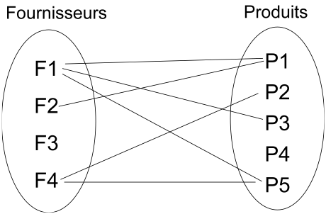
|
- Nom d’une association
-
Afin de clarifier les informations, il est important de nommer les associations. Il existe trois façons de nommer une association :
-
un verbe à l’infinitif (e.g.,
Fournir) -
un verbe conjugué avec un sens de lecture :
Fournit >ou< Est fourni par -
un rôle (placé à une extrémité de l’association)
-
- Cardinalité
-
Indique à combien d’instances minimum et maximum du bloc d’en face est lié toute instance du bloc de départ. Elle est représentée par un couple
(M..N).
|
Attention, dans une cardinalité |
| Notez que le terme anglais est multiplicity, mais que le terme français multiplicité est moins souvent utilisé. Nous le réserverons pour les nombre de parties d’un bloc par exemple. |
Vers le code : que signifie vraiment une association?
En terme de logiciel, une association représente une contrainte sur la suite du développement : que ce soit un code (en langage orienté objet la plupart du temps) ou une base de donnée.
Pour reprendre l’exemple précédent, cela signifie concrètement au niveau d’un code par exemple
que depuis une variable Produits on doit être capable d’accéder à une variable (correspondante)
de type tableau (ou liste, ou …) de Fournisseurs.
Ce qui peut donner en java :
public class Produits
{
//Produits Attributes
private String idPro;
private String designation;
private float poids;
//Produits Associations
private List<Fournisseurs> fournisseurs;
...En terme d’ingénierie système, on utilisera plutôt des associations spécifiques (surtout la composition).
BEn terme d’Ingénierie Système, une composition indique que l’élément est une partie intégrante (on parle de part) du tout (un composant, comme le moteur d’une voiture par exemple) tandis q’une agrégation indique que l’élément est une partie "externe" (on parle de reference) comme la batterie d’un portable.
|
Un moyen simple en terme logiciel de déterminer si une association
|
Généralisation/Spécialisation
Lorsque plusieurs blocs ont des caractéristiques en communs (propriétés, associations, comportement), il peut être utile de "factoriser" ces éléments en un bloc dont les autres vont "hériter". Quand on réalise ces liens hiérarchiques (on utilise souvent le terme "est un") en partant des blocs différents pour établir un nouveau bloc contenant les points communs on parle de généralisation. À l’inverse, quand on constate qu’un bloc possède réellement plusieurs déclinaisons différentes et que l’on créé alors des blocs spécifiques, on parle alors de spécialisation.
On retrouve cette association entre blocs, mais aussi entre acteurs, cas d’utilisation, etc.
9.4. Internal Block Diagrams
Un ibd décrit la structure interne d’un bloc sous forme de :
- parts
-
Les parties qui constituent le système (ses sous-systèmes)
- ports
-
Elément d’interaction avec un bloc
- connecteurs
-
Liens entre ports
9.4.1. Parts
Les parties sont représentés par les éléments au bout d’une composition dans un bdd.
Elles sont créés à la création du bloc qui les contient et sont détruites avec lui s’il
est détruit (dépendance de vie).
|
Il ne s’agit pas de redessiner le BDD. Les parts sont des instances et non des classes (au sens objet). |
On représente les parts comme des bloc en traits pleins et les references comme des blocs en trait pointillés.


Ports (SysML 1.2)
|
La dernière version de la spécification SysML 1.5 préconise l’abandon des ports tels que définis dans la version 1.2. Nous présentons les nouvelles notions dans la section qui suit. Néanmoins, de par l’importance des exemples qui utilisent les notions habituelles de ports, et vu que tous les outils ne supportent pas encore les nouveaux ports, nous indiquons ici leur définition et recommandons pour l’instant de les utiliser. |
Les ports :
-
préservent l’encapsulation du bloc
-
matérialise le fait que les interactions avec l’extérieur (via un port) sont transmise à une partie (via un connecteur)
-
les ports connectés doivent correspondre (kind, type, direction, etc.)
|
Les ports définissent les points d’interaction offerts ( |

|
|
Définition : Ports (OMG SysML v1.5, p. 75)
Ports are points at which external entities can connect to and interact with a block in different or more limited ways than connecting directly to the block itself. |

Les ports peuvent être de nature classique (comme en UML™) et représenter la fourniture ou le besoin de services. On parle alors de *standard flows*.
Ils peuvent aussi être de nature "flux physique", on parle de *flow ports*.
Les Flux peuvent être :
-
atomiques (un seul flux),
-
composites (agrégation de flux de natures différentes).
|
Un flow port atomique ne spécifie qu’un seul type de flux en entrée ou en sortie (ou les deux), la direction étant simplement indiquée par une flèche à l’intérieur du carré représentant le port. Il peut être typé par un bloc ou un Value Type représentant le type d’élément pouvant circuler en entrée ou en sortie du port. |
9.4.2. Ports (SysML 1.3)
La version 1.3 de la spécification SysML™ introduit les concepts de :
- proxy port
-
Ils doivent remplacer les ports
1.2(ports de flots et ports standards) en en reprenant les caractéristiques et en ajoutant la possibilité d’imbrication et de spécification renforcée. - full port
-
En fait il s’agit du même concept qu’une partie qui serait exposée à l’extérieur.
|
Pour une discussion sur les différences entre les deux ports : http://model-based-systems-engineering.com/2013/09/23/sysml-full-ports-versus-proxy-ports/ |
9.5. Parametric Diagrams
Afin de capturer de manière précise les contraintes entre valeurs, ou encore les liens entre les sorties et les entrées d’un bloc, SysML™ utilise trois concepts clefs :
-
Constraints (un type de bloc)
-
Parametric diagram (un type d'ibd )
-
Value binding
9.5.1. Contraintes
C’est un bloc particulier :
-
avec un stéréotype
[constraint](au lieu de bloc) -
des paramètres en guise d’attributs
-
des relations liant (contraignant) ces paramètres
|
|
Définition : ConstraintBlock (OMG SysML v1.5, p. 105)
A constraint block is a block that packages the statement of a constraint so it may be applied in a reusable way to constrain properties of other blocks. |
9.5.2. Diagramme paramétrique
C’est une forme particulière de Internal Block Definition

9.5.3. Value Binding
Une fois les contraintes exprimées, il faut lier les paramètres (formels) à des valeurs (paramètre réel). C’est l’objet des Value Binding.
Pour assigner des valeurs spécifiques, on utilise des Block Configurations;

9.6. En résumé
En résumé, il existe plusieurs diagrammes permettant d’exprimer la structure du système à concevoir. En fonction du niveau de détail nécessaire on peut voir les sous-systèmes comme des boîtes noires (des blocs) ou comme des boîtes blanches (grâce à l'`ibd` correspondant).
| Exigences | Structure | Comportement | Transverse | |
|---|---|---|---|---|
Organisation |
|
|||
Analyse |
||||
Conception |
||||
Implémentation |
10. Comportement local
|
Commentaire
|
10.1. Fondements
| Exigences | Structure | Comportement | Transverse | |
|---|---|---|---|---|
Organisation |
You are here! |
|||
Analyse |
You are here! |
|||
Conception |
You are here! |
|||
Implémentation |
You are here! |
10.2. Diagramme d’états
10.2.1. Machines à état
SysML™ a repris le concept, déjà connu en UML™, de machine à états (State Machines). Ce diagramme représente les différents états possibles d’un élément particulier (généralement un bloc), et comment ce bloc réagit à des événements en fonction de son état courant (en passant éventuellement dans un nouvel état).
|
Quand utiliser une machine à états?
Tous les éléments d’un système ne nécessitent pas d’avoir un comportement décrit de manière précise par une machine à état. Quelques situations typiques peuvent faire penser qu’il peut être judicieux de le faire :
|
10.2.2. Transitions
Cette réaction (nommée transition) possède un événement déclencheur, une condition (garde), un effet et un état cible,
comme illustré dans la figure suivante, qui se lit :
"Si le bloc est dans l’état 'Etat1' et que survient l’événement événement et que la condition guarde est vraie,
alors exécuter effet et se plaver dans l’état Etat2."
|
Quand vous clickez sur une transition (ou F2), l’éditeur qui s’ouvre pour saisir le texte de la transition peut vous assister. En tapant Ctrl-Space, vous obtenez les concepts disponibles. 
Figure 56. Editeur de transition "intelligent"
|
|
10.2.3. Premiers "pseudo-états"
Le diagramme d’états comprend également deux états particuliers (appelés pseudo-états) :
-
l’état initial du diagramme d’états correspond à l’état dans lequel on "démarre" la machine a état (à la création d’une instance par exemple);
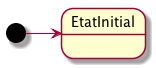Figure 57. Etat initial -
l’état final du diagramme d’états correspond à la destruction de l’instance.
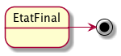Figure 58. Etat final
| Nous verrons d’autres pseudo-états un peu plus tard. |
Voici un exemple complet de machine à état :

| Notez que cette machine à état n’a pas d’état final, son exécution est infinie. |
10.2.4. Activités d’un état
Un état, outre l’intérêt conceptuel de représenter un situation particulièrement intéressante
de l’élément qu’elle décrit (comme l’état Full de la pile de la Stack de la figure précédente),
peut avoir son propre comportement.
Il est possible de préciser ce qui se passe (exécution de méthode, envoie de messages, etc.) :
| entry |
en entrant dans l’état (par exemple initialiser une variable) |
| doActivity |
en cours d’état (et après toute |
| exit |
au moment de sortir de l’état (et juste avant la transition sortante elle-même) |
10.2.5. États composites
Lorsque le comportement d’un état nécessite plus de détails, on créé un état composite (aussi appelé super-état) qui est lui-même une machine à état. On peut ainsi factoriser des transitions déclenchées par le même événement (et amenant vers le même état cible), tout en spécifiant des transitions particulières entre les sous-états. Il est également possible d’attacher un diagramme d’états à un état (composite du coup) pour garder une représentation hiérarchique.
10.2.6. Régions concurrentes
Un diagramme d’états peut représenter des régions concurrentes (dont les activités peuvent évoluer en parallèle), graphiquement représentées par des zones séparées par des traits pointillés. Chaque région contient ses propres états et transitions.
10.2.7. Pseudo-états complémentaires
Il existe d’autres concepts utiles :
| choice |
permet de représenter un branchement conditionnel (sur les guardes) d’une même transition. 
Figure 62. Exemple d’utilisation du choice
|
| fork |
permet de paralléliser une transition vers deux (ou plus) états de sortie. |
| join |
permet de synchroniser deux (ou plus) transitions d’entrée. Par défaut il faut que toutes
les transitions entrantes soit tirées ( |
| shallowHistory |
permet de replacer l’état composite dans les états au moment de la précedente sortie, mais uniquement au niveau où est placé le pseudo-état. |
| deepHistory |
permet également de replacer l’état composite dans les états au moment de la précedente sortie, mais cette fois y compris dans tous les sous-états. |
10.2.8. Déclenchement des transitions
Les événements déclencheurs d’une transition peuvent être de nature différente :
- Call Event
-
déclenché par l’invocation d’une méthode, c’est à dire d’une opération fournie par l’élément considéré (le nom de l’opération est utilisé)
- Signal Event
-
déclenché par l’arrivée d’un signal asynchrone (le nom du signal est utilisé)
- Time Event
-
déclenché à un certain moment, que ce soit absolu (mot-clef
at) ou relativement à l’entrée dans l’état (mot-clefafter). Très utile pour représenter la notion de Time-Out. - Change Event
-
déclenché par le changement de valeur d’un élément (un attribut par exemple). On utilise le mot-clef
whenExemplewhen "t==10"
10.2.9. À vous de jouer
|
Commentaire
|
10.3. Diagramme d’activité
Le diagramme d’activité est étudié dans ce livre plus en détail au chapitre Diagrammes d’activité, dans la partie sur les interactions. Il s’agit d’un diagramme souvent utilisé pour représenter le comportement du système, notamment des scénarios des cas d’utilisation. Nous revoyons le lecteur au chapitre Diagrammes d’activité pour plus de détails.
11. Interaction
|
Commentaire
|
11.1. Fondements
| Exigences | Structure | Comportement | Transverse | |
|---|---|---|---|---|
Organisation |
You are here! |
|||
Analyse |
You are here! |
|||
Conception |
You are here! |
|||
Implémentation |
You are here! |
On abordera :
| Les State Machines sont vues dans la partie sur les comportements. |
11.2. Diagrammes de séquence
11.2.1. Généralités
Il permet de :
-
modéliser les interactions
-
représenter les échanges de messages
-
séquencer ces échanges dans le temps
-
spécifier les scénarios des cas d’Utilisation
Les éléments qui composent ce diagramme sont :
- Lignes de vie
-
des lignes verticales pointillées représentant un élément en interaction, et qui permettent d’indiquer un départ ou une arrivée d’interaction
- Barres d’activation
-
pour matérialiser sur une ligne de vie quand l’élément correspondant est actif
- Messages
-
ce qui "circule" d’un élément à l’autre (signal, appel de méthode, …)
Par commodité nous parlerons aussi de :
- Participants
-
les éléments en interaction (des parties ou des références généralement), correspondant au nom et au type de la ligne de vie (cadre en haut des lignes de vie).
|
Les participants représentent des instances, souvent "anonymes". Ils ne sont pas à proprement parler des éléments |
11.2.2. Exemple
ToDo
11.2.3. Notions avancées
On peut également représenter des instructions itératives ou conditionnelles au travers de fragments combinés (combined fragments). Un fragment combiné possède un opérateur (interaction operator) et un ou plusieurs opérandes (operands).
Les principaux opérateurs sont :
-
loop(boucle) -
alt(alternative) -
opt(optionel) -
par(parallèle)
Chaque opérande est assortie d’une guarde qui permet de déterminer les
conditions sous lesquelles cette partie du scénario s’exécute.


Exemple de conceptions
Le diagramme de séquences est un diagramme utile pour montrer les "responsabilités" de certains objets par rapport aux autres. Dans un code logiciel, on peut y déceler plus facilement que tel objet est plus chargé que d’autres. Les deux diagrammes suivants (tirés de [Fowler2004]) montrent deux conceptions différentes possibles pour l’implémentation d’une même fonctionnalité. On mesure visuellement assez bien la différence entre la version "centralisée" (Conception "centralisée" (source [Fowler2004])) et la version "objet" (Conception "objet" (source [Fowler2004])).


|
On utilise le diagramme de séquence pour représenter des algorithmes et des séquencements temporels. Lorsque le comportement se rapproche plus d’un flot, on utilise le diagramme d’activité (cf. section sur le Diagrammes d’activité). |
Lien entre UC, DSS et DS
La décomposition hiérarchique permet une description "TOP-DOWN" du système à réaliser.
On fait un Diagramme de Séquence Système pour chaque cas d’utilisation (issu du Diagramme d’UC) pour déterminer les échanges d’informations entre l’acteur et le système.
Ensuite on fait un Diagramme de Séquence (DS) pour décrire comment les blocs composant le système (issus du bdd) collaborent pour réaliser le traitement demandé.


Cadres référence
Les diagrammes de séquence représentent une interaction qui peut être utilisée dans une autre interaction (à la manière d’un appel de fonction en programmation). L’opérateur ref est alors utilisé.
Le temps dans les diagrammes de séquence
Il est possible d’ajouter des contraintes liées au temps dans un diagramme de séquence :
-
des contraintes de durée entre 2 événements
-
des contraintes de temps pour spécifier des instants dans un scénario
Pour aller plus loin…
Nous n’avons pas présenté dans ce livre un certain nombre de concepts complémentaires :
-
certains opérateurs (
strict,break,critical, …), relativement peu utilisés; -
les invariants d’état, qui permettent de contraindre les interactions en fonction de l’état dans lequel se trouve le participant;
-
la possibilité de décomposer les lignes de vie, pour représenter les comportements internes.
11.2.4. À vous de jouer
|
Commentaire
|
11.3. Diagrammes d’activité
Le diagramme d’activité (Activity Diagrams) permet de décrire les traitements. Il sert très souvent à décrire plus en détail les cas d’utilisation. Il est utilisé pour représenter les flots de données et de contrôle entre les actions. Il est utilisé en général pour détailler un cas d’utilisation. Il est utilisé pour l’expression de la logique de contrôle et d’entrées/sorties. Le diagramme d’activité sert non seulement à préciser la séquence d’actions à réaliser, mais aussi ce qui est produit, consommé, ou transformé, au cours de l’exécution de cette activité.

Les éléments de base du diagramme d’activité sont :
-
les activités,
-
les actions,
-
les flots de contrôle entre actions,
-
les décisions (branchements conditionnels),
-
un début et une ou plusieurs fins possibles.
11.3.1. Activités
Une activité représente les aspects algorithmiques d’un comportement. Elle permet de modéliser un processus par exemple. Une activité possède :
-
un ensemble de paramètres (input,output,input/output)
-
un ensemble d’actions (appel de méthode, lecture, écriture, …)
-
un ensemble de flots entre actions (de contrôle ou de données)
11.3.2. Actions
Les actions sont les unités fondamentales pour spécifier les comportements en SysML™. Une action représente un traitement ou une transformation et ne peuvent pas être décomposées (vous êtes sûrement en présence d’une activité si vous ressentez le besoin de décomposer…). Les actions sont contenues dans les activités, qui leur servent alors de contexte.

| Call operation |
invocation d’une opération sur un objet. Utilisé pour appeler une méthode. |
| Call behavior |
invocation d’une activité. Utilisé pour réutiliser une activité déjà décrite. |
| Send |
création d’un message et transmission (asynchrone) à un objet cible. Utilisé pour envoyer des signaux. |
| Accept event |
attente de la réception du type d’événement spécifié (un signal le plus souvent). Utilisée pour recevoir des signaux (asynchrones). |
| Accept call |
idem que le précédent mais pour les appels synchrones. |
| Reply |
transmission d’un message en réponse à un accept call. |
| Create |
création d’une instance (de bloc ou, plus généralement, d’objet). |
| Destroy |
destruction d’une instance. |
| Raise exception |
pour lever une exception. |
11.3.3. Flots
Un flot de contrôle permet le contrôle de l’exécution des noeuds d’activités. Les flots de contrôle sont des flèches reliant deux noeuds (actions, décisions, etc.).
Le diagramme d’activité permet également d’utiliser des flots d’objets (reliant une action et un objet consommé ou produit). Les object flow, associés aux broches d’entrée/sortie (input/output pin) permettent alors de décrire les transformations sur les objets manipulés.

Pour permettre la modélisation des flots continus, SysML™ ajoute à UML™ la possibilité de caractériser la nature du débit qui circule sur le flot : continu (par exemple, courant électrique, fluide, etc.) ou discret (par exemple, évenements, requêtes, etc.).
On utilise pour cela des stéréotypes : <<continuous>> et <<discrete>>. Par défaut, un flot est supposé discret.
|
|
Définition : FlowProperty (OMG SysML v1.5, p. 82)
A FlowProperty signifies a single flow element to/from a block. A flow property has the same notation as a Property only with a direction prefix (in | out | inout). Flow properties are listed in a compartment labeled flow properties. |
11.3.4. Décision
Une décision est un noeud de contrôle représentant un choix dynamique entre plusieurs conditions (mutuellement exclusives). Elle est représentée par un losange qui possède un arc entrant et plusieurs arcs sortants. Il existe plusieurs noeuds de contrôle (cf. Les différents contrôles de flow SysML) :
- fork
-
Un fork est un noeud de contrôle représentant un débranchement parallèle. Il est représenté par une barre (horizontale ou verticale) qui possède un arc entrant et plusieurs arcs sortants. Le fork duplique le "jeton" entrant sur chaque flot sortant. Les jetons sur les arcs sortants sont indépendants et concurrents.
- join
-
Un join est un noeud de contrôle structuré représentant une synchronisation entre actions (rendez-vous). Il est représenté par une barre (horizontale ou verticale) qui possède un arc sortant et plusieurs arcs entrants. Le join ne produit son jeton de sortie que lorsqu’un jeton est disponible sur chaque flot entrant (d’où la synchronisation).
- flow final
-
Contrairement à la fin d’activité qui est globale à l’activité, la fin de flot est locale au flot concerné et n’a pas d’effet sur l’activité englobante.
- merge
-
La fusion est l’inverse de la décision : le même symbole du losange, mais cette fois-ci avec plusieurs flots entrants et un seul sortant.

|
Pour se rapprocher de SADT/SART, la norme prévoit la possibilité d’utiliser les pointillés pour les flux de contrôle. |
|
|
Définition : ControlFlow (OMG SysML v1.5, p. 120)
Control flow may be notated with a dashed line and stick arrowhead… |
11.4. Réutilisation
Les activités peuvent être réutilisées à travers des actions d’appel (callBehaviorAction).
L’action d’appel est représentée graphiquement par une fourche à droite de la boîte d’action, ainsi que par la chaîne : nom d’action : nom d’activité. SysML™ propose encore bien d’autres concepts et notations, comme la région interruptible, la région d’expansion ou encore les flots de type stream qui sortent du cadre de ce livre d’introduction.

11.5. À vous de jouer
|
Commentaire
|
11.6. En résumé
Il existe de nombreux diagrammes pour exprimer les comportements. Ces modèles sont importants dans la mesure où ils peuvent servir à valider le futur système vis-à-vis de ces comportements exprimés. Ils ne sont donc véritablement utiles que lorsqu’ils sont couplés à des outils de simulation ou d’analyse (cf. [Analyse]).
| Exigences | Structure | Comportement | Transverse | |
|---|---|---|---|---|
Organisation |
||||
Analyse |
||||
Conception |
||||
Implémentation |
11.7. Questions de révision
-
Comment, pour exprimer un comportement, savoir si j’ai besoin d’un diagramme de séquence plutôt qu’un diagramme d’activité ou encore d’une machine à état ?
12. Préoccupations transverses de modélisation
|
Commentaire
|
On abordera :
-
Le diagramme paramétrique (aspects transveres)
12.1. Organisation
| Exigences | Structure | Comportement | Transverse | |
|---|---|---|---|---|
Organisation |
You are here! |
|||
Analyse |
||||
Conception |
||||
Implémentation |
12.1.1. Fondements
On abordera :
-
Le Package Diagram
-
Les différent types de packages
-
Les organisations possibles
-
La notion de Namespaces
-
Les Dependencies
12.1.2. Le Package Diagram
Le diagramme de paquetage permet de représenter l’organisation des modèles en paquetages.
-
Il est identique à UML™, et classique pour les développeurs (java notamment)
-
Il permet d’organiser les modèles en créant un espace de nommage (cf La notion de Namespaces)
12.1.3. Les différent types de packages
Il existe plusieurs types de packages :
models
|
un package "top-level" dans une hiérarchie de packages |
packages
|
le type le plus classique : un ensemble d’éléments de modèles |
model librairies
|
un package prévu pour être réutilisé (importé) par d’autres éléments |
views
|
un package spécial pour représenter les points de vue |
|
Un point de vue (viewpoint) est utilisé pour matérialiser une perspective particulière de modélisation.
Il possède des propriétés standardisés (concerns, language, purpose, etc.) et permet d’indiquer qu’une
vue (un packetage particulier, stéréotypé |
12.1.4. Les organisations possibles
Les modèles peuvent être organisés selon toutes sortes de considération :
-
par hiérarchie "système" (e.g., entreprise, système, composant, …)
-
par types de diagrammes (e.g., besoins, structure, comportements, …)
-
par cycle de vie (e.g., analyse, conception, …)
-
par équipes (e.g., architectes, [IPT], …)
-
par points de vue (e.g., sécurité, performance, …)
-
etc.


12.1.5. La notion de Namespaces
Un package permet de créer un espace de nommage pour tous les éléments qu’il contient. Ainsi, dans un package, on n’a pas à se soucier des noms des éléments. Même si d’autres utilisent les mêmes noms, il n’y aura pas ambiguïté.
|
|
Définition : Namespace (OMG SysML v1.5, p. 23)
The package defines a namespace for the packageable elements. |
Pour éviter toute ambiguïté, on peut utiliser pour les éléments de modèles leur nom complet (Qualified name),
c’est à dire le nom de l’élément préfixé par son (ou ses) package(s)
(e.g., Structure::Products::Clock).
|
Dans les outils SysML™, il faut souvent demander explicitement à voir les noms complets (Qualified names) des éléments (la plupart du temps dans les options graphiques). |
12.1.6. Les dépendances
Un certain nombre de dépendances peuvent exister entre des éléments de package ou entre les packages eux-mêmes :
| Dependency |
une dépendance "générale", non précisée, représentée par une simple flèche pointillée -----> |
| Use |
l’élément "utilise" celui à l’autre bout de la flèche (un type par exemple),
représentée par le stéréotype |
| Refine |
l’élément est un raffinage (plus détaillé) de celui à l’autre bout de la flèche,
représentée par le stéréotype |
| Realization |
l’élément est une "réalisation" (implémentation) de celui à l’autre bout de la flèche,
représentée par le stéréotype |
| Allocation |
l’élément (e.g., une activité ou un requirement) est "alloué" sur celui à l’autre
bout de la flèche (un |
12.2. La traçabilité des exigences
Nous avons vu déjà un certain nombre de mécanismes SysML™ qui permettent de tracer les exigences.
Nous les regroupons ici dans une matrice spécifique (qui se lit dans le sens des relations, par exemple un élément de structure comme un bloc <<satisfy>> une exigence).
| Exigences | Structure | Comportement | |
|---|---|---|---|
Comme indiqué dans le tableau ci-dessus, en général, le lien de raffinement est utilisé entre une exigence et un élément comportemental (état, activité, uc, etc.) tandis que l’allocation concerne principalement les éléments de structures.
XXX Mettre un exemple avec tous ces liens. XXX
12.3. Les mécanismes d’allocation
Un mécanisme nouveau en SysML™ et important pour lIngénierie Système est le mécanisme d'allocation. Il permet de préciser quel élément conceptuel (comme un comportement ou une activité) est alloué sur quel élément physique. Il est possible d’exprimer cette allocation de plusieurs manières.
XXX ToDO XXX
-
Parler du
<<AllocatedTo>>, compartiments des blocs et autres annotations. -
Parler des zones d’allocation dans les machines à états où les diagrammes d’activités par exemple.
-
Parler des
<<allocate>>.
12.4. Le diagramme paramétrique
C’est une forme particulière d'Internal Block Definition (cf. Parametric Diagrams). On y retrouve les contraintes, déjà vues (cf. Exemple de définition de contraintes), mais cette fois-ci on a la représentation graphique des liens entre les données.
|
Il est regrettable que ce diagramme soit le moins utilisé (cf. [OMG2009]). 
Figure 80. Diagrammes les plus utilisés (tiré de [OMG2009])
|
|
Certaines approches (cf. [MeDICIS]) utilisent des feuilles excel pour traduire les diagrammes paramétriques et contrôler l’impact des changements de valeurs de tel ou tel paramètre. |
12.5. En résumé
SysML™ propose un certain nombre de mécanismes pour organiser les différents modèles, tirés pour la plupart d’UML™. Ces mécanismes seront plus faciles à comprendre au travers de leur utilisation concrète dans la suite.
| Exigences | Structure | Comportement | Transverse | |
|---|---|---|---|---|
Organisation |
|
|
|
|
… |
12.6. Questions de révision
-
Quels sont les 5 types de dépendances entre packageable elements ?
-
À quoi cela peut-il servir de définir les dépendances (donnez des exemples concrets) ?
-
Quelles sont les différences entre
<<satisfy>>et<<allocate>>? -
Pourquoi est-il important de relier un use case à au moins un requirement ?
-
L’inverse est-il aussi important ?
13. Modéliser oui, mais…
|
Commentaire
|
13.1. Collaborer et gérer les version de modèles
|
Commentaire
|
Pour pouvoir collaborer à plusieurs autour du même modèle, il est nécessaire d’utiliser des outils appropriés. Dans cette section nous illustrons l’utilisation des plugins eclipse : EGit et EMFCompare. Nous avons expérimenté avec succès[9], l’utilisation de cette solution avec 24 étudiants collaborant sur le même modèle {Papurys}.
13.1.1. Vade Mecum
Voici quelques instructions qui vous permettrons de gérer simplement les version de vos modèles :
-
Si vous avez installé directement Papyrus-SysML (sans passer par le plugin eclipse), installez le composant Papyrus-SysML complémentaire .
-
Installez également le plugin suivant en allant sur : http://download.eclipse.org/modeling/emf/compare/updates/logical/emf.compare/integration
-
Allez dans et sélectionner
Recursive Model Merge StrategydansPreferred merge strategy

| Si vous n’avez pas cette option à cocher, vous n’avez pas la bonne version des plugins! . |
13.2. Compléments Papyrus
|
Commentaire
|
13.2.1. Personnaliser les styles
13.2.2. Layer Support
13.2.3. Model Execution
Pour aller plus loin, consultez la documentation spécifique : https://wiki.eclipse.org/Papyrus/UserGuide/fUML_ALF.
13.2.4. Reverse Engineering
13.2.5. Fragmenter un modèle
13.2.6. Papyrus for Requirements
Références
-
[OCSMP] Certified Systems Modeling Professional. http://www.omg.org/ocsmp/
-
[SysML] OMG Systems Modeling Language (OMG SysML). Version 1.5. formal/2017-05-01. Available here.
-
[Kordon] Embedded Systems Analysis and Modeling with SysML, UML and AADL, F. Kordon, J. Hugues, A. Canals, A. Dohet, Wiley, 2013.
-
[REQ2012] Guide Bonnes Pratiques en Ingénierie des Exigences, AFIS 2012.
-
[Sommerville1997] Ian Sommerville, Pete Sawyer. Requirements Engineering: A Good Practice Guide. Wiley, 1997.
-
[Fowler2004] Martin Fowler. UML 2.0 INFORMATIQUE PROFESSIONNELLE, 2004.
-
[OMG2009] The Current State of Model Based Systems Engineering: Results from the OMG SysML Request for Information.
-
[Neptune17] Conférence Neptune'2017. CNAM Paris. 01/06/2017.
-
[Jézéquel] Le bouquin sur l’ingénierie des modèles de Benoit et al.
Appendix A: Acronymes
Liste des acronymes utilisés dans ce livre.
| ACT |
ACTivity Diagram, le diagramme d’activité (cf. Diagrammes d’activité) |
| BDD |
Block Definition Diagram, le diagramme de définition de bloc (cf. Block Definition Diagrams) |
| DS |
Diagramme de Séquence (cf. Diagrammes de séquence) |
| DSS |
Diagramme de Séquence Système (cf. Diagrammes de séquence) |
| IBD |
Internal Block Diagram, le diagramme de blocs internes (cf. Internal Block Diagrams) |
| IDE |
Integrated Development Environment, environnement de développement intégré (comme eclipse ou IntelliJ) |
| IS |
Ingénierie Système |
| PAR |
Parametric Diagram, le diagramme paramétrique (cf. Parametric Diagrams) |
| PKG |
Package Diagram, le diagramme des paquetages (cf. Le Package Diagram) |
| REQ |
REQuirements Diagram, le diagramme des exigences (cf. [RE]) |
| SD |
Sequence Diagram, le diagramme de séquence (cf. Diagrammes de séquence) |
| STM |
STate Machine Diagram, le diagramme d’états (cf. Diagramme d’états) |
| SysML |
Systems Modeling Language |
| UC |
Use Case Diagram, le diagramme des cas d’utilisation (cf. Exemple de cas d’utilisation) |
| UML |
Unified Modeling Language |
Appendix B: Traductions
|
Commentaire
|
De nombreux utilisateur de SysML™ sont habitués aux termes anglais de cette notation. Nous reprenons ici la liste des traductions françaises que nous avons utilisées (et qui ne sont pas standard) pour permettre au lecteur de faire une correspondance.
| Activity Diagram |
Diagramme d’activité (cf. Diagrammes d’activité) |
| Actor |
Acteur |
| Block Definition Diagram |
Diagramme de définition de bloc (cf. Block Definition Diagrams) |
| Composite State |
État composite (ou super-état) |
| Diagram Frame (et Header) |
Cadre (et cartouche) (cf. Cadre pour les diagrammes) |
| Internal Block Diagram |
Diagramme de blocs internes (cf. Internal Block Diagrams) |
| Multiplicity |
Cardinalité (ou Multiplicité) |
| Parametric Diagram |
Diagramme paramétrique (cf. Parametric Diagrams) |
| Package |
Paquetages, mais nous préférons garder Package, admis dans le vocabulaire courant, du moins en informatique. |
| Package Diagram |
Diagramme des paquetages (cf. Le Package Diagram) |
| Requirements |
Exigences |
| Requirements Diagram |
Diagramme des exigences (cf. [RE]) |
| Sequence Diagram |
Diagramme de Séquence (cf. Diagrammes de séquence) |
| Stakeholders |
Parties prenantes (du système) |
| State Machine |
Machine à état |
| State Machine Diagram |
Diagramme d’états (cf. Diagramme d’états) |
| Use Case Diagram |
Diagramme des cas d’utilisation (cf. Exemple de cas d’utilisation) |
Appendix C: Notation
Diagramme des exigences
Exigence |
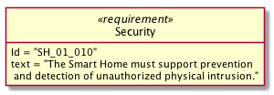 |
Composition |
|
Dépendance |
Traçabilité |
Diagramme d’état
Etats, transition |
Etat initial |
||
Etat final |
Choice |
|
Appendix D: Les histoires de SysML et de Papyrus
Histoire de SysML
SysML™ est né…
=> Diagrammes et jalons importants
=> Le futur et les changements techniques à venir, dans les cartons de l'{omg}.
Histoire de Papyrus
Papyrus-SysML est né…
Couverture des concepts
Comme indiqué en avant-propos de ce livre, nous n’abordons qu’une partie des concepts SysML™, les plus importants. Nous nous sommes basés sur la classification du système de certification de l’OMG™ [OCSMP].
Nous indiquons dans le tableau ci-dessous le différents concepts du niveau initial (Model User) de la certification Certified Systems Modeling Professional™ et où ils sont abordés dans le livre.
Modèles d’exigences
| Concept | Lien |
|---|---|
Exigences |
|
derive, verify, satisfy, refine, trace, containment |
|
Diagramme d’exigences |
|
Diagramme des cas d’utilisation |
|
use case, actor, and subject |
|
association, include, extend, generalization |
Modèles structurels
| Concept | Lien |
|---|---|
Package Diagram |
|
ownership, namespace |
|
containment, dependency |
|
view, viewpoint |
|
Block definition, Block usage |
|
valuetype (with units) |
|
value properties, parts, references, and operations |
|
Block Definition Diagram |
|
compartments |
|
specialization, associations (including composite[10]), multiplicities |
|
Internal Block Diagram |
|
enclosing block |
|
flow ports and standard ports |
|
connectors and item flows |
|
representation of parts |
|
constraint blocks |
|
Parametric Diagram |
|
constraint properties, constraint parameters, and constraint expressions |
|
connecting constraint properties and value properties with binding connectors |
Modèles comportementaux
| Activity Diagram | |
|---|---|
I/O flow including object flow, parameters and parameter nodes, and pins |
|
control flow including control nodes |
|
activity partitions (swimlanes) |
|
actions |
|
send signal action |
|
accept event action |
|
Sequence Diagram |
|
lifelines; asynchronous and synchronous messages |
|
interaction references |
|
State Machine Diagram |
|
states and regions |
|
transitions |
|
trigger by time and signal events, guard, and action |
|
behaviors (entry, exit, and do) |
Eléments transverses
| Allocation | |
|---|---|
AllocatedFrom and AllocatedTo |
|
representation (callouts, compartments, allocate activity partitions, and tables) |
|
special notations for comment, rationale, problem, and constraint |
|
diagram frames, ports, parameters, and anchors on diagram frames |
|
diagram header, and diagram description |
|
Stereotype |
Appendix E: Nouveautés de SysML 1.5
Pour les lecteurs habitués à SysML™ 1.4 nous résumons ici les principales nouveautés de la version 1.5.
Exigences
Nous avons traité en détail cet aspect dans la section Nouveauté de SysML 1.5.
Appendix F: Et le futur? SysML 2!
Quelques mots en provenance de l’OMG™.
Appendix G: Index (Reference guide)
Liste des concepts et renvoies vers leur description dans le livre.
Divers (notes et ToDoList)
-
Au sujet de SysML
-
s’appuyer sur les niveaux tels que définit dans le certificat SysML de l’OMG cf. Niveaux de concepts SysML
-
-
Sur le format :
-
Limite du nombre de pages ⇒ 250 pages
-
Liens avec le livre SysML de Sandy ?
-
Solutions possibles d’organisation globales :
-
si public débutant seulement alors un chapitre sur les possibilités avancés incluant les facilités de personnalisation, intégration avec d’autres formalismes/outils, etc.
-
si public débutant et avancé, alors :
-
Deux parties dédiés.
-
Pour chaque chapitre (quand cela fait du sens), avoir deux niveaux de présentation, débutant et avancé.
-
Des parties bien marquées « avancé » au fil de l’eau.
-
-
-